高盛：对泡泡玛特单日暴跌23%的看法
时长 07:57 · 分辨率 852x480 · 生成于 2026-07-07 | 来源
ref/BV1kMXsBBEo9.mp4· 视频链接
概述
本视频深度解读了高盛于3月26日发布的关于泡泡玛特（9992.HK）的研报。报告指出，尽管泡泡玛特2025年下半年交出了营收同比增长174%、净利润同比增长272%的亮眼财报，但高盛却将其评级下调至“中性”，目标价从300港元大幅下调39%至184港元。视频分析了高盛下调评级背后的三大原因（美洲及欧洲市场增长放缓、汇兑损失），同时也肯定了其在中国大陆市场的强劲表现、核心IP（如The Monsters/Labubu）的爆发力以及品类结构的成功调整。最后，视频总结了泡泡玛特面临的机遇与风险，并对其2026年的战略规划进行了展望。
研报核心信息
高盛对泡泡玛特（9992.HK）的最新评级与目标价如下：
| 项目 | 数据 |
|---|---|
| 当前股价 | 168.30 港元 |
| 高盛评级 | 中性 |
| 12个月目标价 | 184.00 港元 |
| 潜在上涨空间 | 9.3% |
| 目标价下调幅度 | 较此前300港元目标价下调 39% |
| 盈利预测调整 | 2026-2027年盈利预测下调 18% |
| 估值倍数调整 | 从20倍PE降至 15倍PE（对标迪士尼一个标准差以下水平） |
高盛认为，此次下调主要反映了公司存在增长放缓和IP动能下降的风险。
2025年下半年业绩回顾
整体业绩
- 收入：234.4亿人民币，同比增长 174%
- 净利润：82亿人民币，同比增长 272%
尽管数据亮眼，但该业绩仍低于高盛预期的8%-10%。
业绩低于预期的三大原因
- 美洲市场增长放缓：2025年下半年同比增长633%，而第三季度增速高达1265%-1270%。
- 欧洲及其他地区增长放缓：2025年下半年同比增长436%，而第三季度增速为735%-740%。
- 汇兑损失：对盈利表现造成了一定影响。
业绩亮点
- 中国大陆市场：表现强于预期，同比增长 134%，比高盛预期高出5%，依然是公司的基本盘。
- 核心IP生态：
- The Monsters (Labubu)：销售增长 287%，达93.5亿元，占总销售额的40%，成为最核心的收入来源。
- Skullpanda：增长216%
- Crybaby：增长110%
- Dimoo：增长214%
- Molly：增长相对平缓，为17%
- IP内容开发：
- Labubu已与索尼影业合作开发电影，目前处于剧本阶段。
- Labubu将参与2026年FIFA世界杯的营销活动。
品类结构与市场战略
品类结构变化
消费者的偏好正在发生变化，毛绒玩具已取代手办成为最大收入来源。
| 品类 | 2025年下半年表现 | 销售额 | 占总销售额比例 |
|---|---|---|---|
| 毛绒玩具 | 爆发式增长，同比增长 427% | 125.7亿元 | 54% |
| 手办类 | 同比增长60% | - | 29% (占比下降) |
| MEGA产品 | 同比下滑 17% | - | - |
海外市场战略
- 门店布局：中国大陆445家门店，海外185家门店。
- 线上与线下：2025年海外线上销售额已超过零售店，但高盛认为长期来看零售店比例将提升。
- 美国市场扩张：计划在2026年于美国市场突破100家门店，包括在时代广场和第五大道开设旗舰店。
- 供应链优化：通过规模经济、数字供应链投资和更严格的产品发布计划来提升运营效率。
新业务拓展与未来展望
新业务拓展
- 主题乐园：1.5阶段预计在2026年夏季完成，2.0阶段已进入设计阶段。
- 新品类：珠宝甜品表现超出预期，计划在2026年4月将新品类扩展至小家电。
- 本地化：招募局部艺术家进行产品开发，以增强与本地消费者的共鸣。
2026年战略定位
泡泡玛特管理层将2026年定位为“运营与组织提升之年”，目标是实现超过20%的同比增长，同时不牺牲盈利能力。公司将重点关注优化组织效率和跨境管理，并计划从2026年5月起提供季度交易更新，以提高运营透明度。
风险与机遇分析
下行风险
- 单一IP风险：过度依赖单一IP（如Labubu），若其热度下降将严重影响业绩。
- IP组合扩展失败：新IP未能获得市场认可。
- 竞争加剧：盲盒和潮玩市场竞争激烈，新竞争对手可能分流市场份额。
- 成本与费用控制不当：影响公司盈利能力。
上行机遇
- 更多IP推出与热度提升：持续推出热门IP并提升现有IP影响力。
- 品类扩展：拓展至小家电等新品类，带来强劲销售。
- 竞争超越：通过强大的IP实力和发布频率在竞争中胜出。
- 供应链与成本管理：更好的供应链管理和更严格的成本控制。
- 超预期的海外发展：海外市场增长超出预期，提升全球市场份额和品牌影响力。
要点速览
- 评级下调：高盛因增长放缓和IP动能下降，将泡泡玛特评级下调至“中性”，目标价下调39%至184港元。
- 业绩分化：2025年下半年营收利润翻倍增长，但低于高盛预期，主要受海外市场增速放缓及汇兑损失影响。
- 核心优势：中国大陆市场基本盘稳固，核心IP Labubu销售强劲，毛绒玩具品类成功取代手办成为第一大收入来源。
- 未来看点：美国市场门店扩张、主题乐园建设、新品类（小家电）拓展以及2026年“运营与组织提升之年”的战略落地。
- 风险提示：需警惕单一IP依赖、市场竞争加剧以及海外扩张不及预期的风险。
附录：原始提取素材
语音全文转写（带时间戳）
[00:00–00:05]你有没有想过当一家曾经被市场捧为盲盒赛道龙头的公司[00:05–00:08]在发布亮眼财报的同时[00:08–00:11]却被头部投行下调了评级和目标价[00:11–00:14]这背后究竟是增长见顶的信号[00:14–00:16]还是市场短期误判的机遇[00:16–00:18]今天咱们就来聊聊[00:18–00:22]高盛在3月26日发布的这份关于泡泡玛特的深度研报[00:22–00:26]看看这份报告里藏着哪些关键信息和投资启示[00:27–00:30]首先 咱们先来看这份研报的基本信息[00:30–00:35]高盛对泡泡玛特给出的评级是中性目标价为184港元[00:35–00:39]而当前泡泡玛特的股价是168.30港元[00:39–00:44]也就是说高盛认为公司股价还有9.3%的上涨空间[00:44–00:45]不过有意思的是[00:45–00:48]这个目标价比之前高盛给出的300港元[00:48–00:51]下调了足足39%[00:51–00:56]同时 高盛还把2026-2027年的盈利预测下调了18%[00:56–00:59]估值倍数也从20倍PE降到了15倍PE[00:59–01:02]对标迪士尼一个标准差以下的水平[01:02–01:07]反映出高盛认为泡泡玛特存在增长放缓和IP动能下降的问题[01:08–01:12]接下来咱们看看泡泡玛特2025年下半年的业绩表现[01:12–01:13]整体来看[01:13–01:18]泡泡玛特2025年下半年的收入达到234.4亿人民币[01:18–01:20]同比增长174%[01:20–01:22]净利润82亿人民币[01:22–01:24]同比增长272%[01:24–01:28]单从数据上看 这绝对是一份亮眼的成绩单[01:28–01:33]但高盛却指出这份业绩低于他们预期的8%-10%[01:33–01:35]为什么会出现这种情况呢[01:35–01:37]高盛分析主要有三个原因[01:37–01:40]首先是美洲市场的增长放缓[01:40–01:44]2025年下半年美洲市场同比增长633%[01:44–01:45]而在2025年第三季度[01:45–01:50]这个增速还在1265%-1270%之间[01:50–01:52]下滑幅度非常明显[01:52–01:54]其次是欧洲及其他地区的增长[01:54–01:55]也出现了放缓[01:55–01:59]2025年下半年同比增长436%[01:59–02:03]而第三季度的增速在735%-740%[02:03–02:05]最后就是汇对损失[02:05–02:08]这也对公司的盈利表现造成了一定的影响[02:09–02:10]不过咱们也不能只看不好的一面[02:10–02:13]高盛也肯定了泡泡玛特在一些方面的表现[02:13–02:15]首先是中国大陆市场[02:15–02:17]表现强于高盛的预期[02:17–02:21]同比增长134%比高盛的预期高出了5%[02:21–02:24]这说明国内市场依然是泡泡玛特的基本盘[02:24–02:27]消费者对公司的IP和产品还是非常认可的[02:27–02:29]其次是IP生态方面[02:29–02:32]泡泡玛特的核心IP The Monsters[02:32–02:35]也就是Labubu的销售增长了287%[02:35–02:37]达到93.5亿元[02:37–02:39]占总销售额的40%[02:39–02:42]成为了公司最核心的收入来源[02:42–02:43]除此之外[02:43–02:45]Skullpanda增长216%[02:45–02:48]Crybaby增长110%[02:48–02:50]丁木增长214%[02:50–02:53]这些热门IP的表现也都非常不错[02:53–02:55]只有猫类的增长相对平缓[02:55–02:57]同比增长17%[02:57–02:58]在IP内容开发方面[02:58–03:01]Labubu已经和索尼营业合作开发电影[03:01–03:03]目前处于剧本阶段[03:03–03:05]同时Labubu还将参与2026年[03:05–03:07]Five世界杯的营销活动[03:07–03:10]这无疑会进一步提升IP的全球影响力[03:11–03:13]在品类结构方面[03:13–03:15]泡泡玛特也发生了一些变化[03:15–03:17]毛绒玩具持续爆发式增长[03:17–03:19]同比增长427%[03:19–03:21]达到125.7亿元[03:21–03:24]贡献了54%的销售额[03:24–03:25]已经超过了首半类产品[03:25–03:28]成为公司最大的收入来源[03:28–03:31]首半类产品虽然也增长了60%[03:31–03:33]但占比已经降至29%[03:33–03:36]而MEGA产品则出现了17%的下滑[03:36–03:39]这说明消费者的偏好正在发生变化[03:39–03:42]泡泡玛特也在及时调整自己的产品结构[03:42–03:43]来适应市场的需求[03:44–03:47]海外市场一直是泡泡玛特重点布局的方向[03:47–03:49]高盛也对泡泡玛特的海外市场战略[03:49–03:51]进行了分析[03:51–03:54]目前泡泡玛特在中国大陆有445家门店[03:54–03:56]海外有185家门店[03:56–04:00]在2025年海外线上销售额已经超过了零售店[04:00–04:02]但高盛认为从长期来看[04:02–04:04]零售店的比例将会提升[04:04–04:06]泡泡玛特计划在2026年[04:06–04:08]在美国市场突破100家门店[04:08–04:11]包括时代广场和第五大道的旗舰店[04:11–04:13]这无疑会进一步提升公司[04:13–04:15]在美国市场的品牌知名度和市场份额[04:15–04:18]同时泡泡玛特还在通过规模经济[04:18–04:20]数字供应链投资[04:20–04:22]更严格的产品发布计划等方式[04:22–04:23]来优化供应链[04:23–04:24]提升运营效率[04:25–04:26]除了现有的业务[04:26–04:29]泡泡玛特也在积极拓展新业务[04:29–04:31]泡泡玛特主题乐园的1.5阶段[04:31–04:33]预计在2026年下季完成[04:33–04:35]2.0阶段已经进入设计阶段[04:35–04:37]主题乐园的建设[04:37–04:39]将会为公司带来新的收入增长点[04:39–04:42]同时也能进一步强化IP的影响力[04:42–04:44]在新品类扩展方面[04:44–04:46]珠宝甜品的表现超出预期[04:46–04:49]泡泡玛特计划在2026年4月[04:49–04:51]将新品类扩展至小家店[04:51–04:53]这说明公司正在不断探索[04:53–04:54]新的业务边界[04:54–04:56]寻找新的增长机会[04:56–04:56]此外[04:56–04:58]泡泡玛特还在招募局部艺术家[04:58–05:00]进行产品开发[05:00–05:02]以增强和本地消费者的共鸣[05:02–05:03]这有助于公司更好的[05:03–05:06]适应不同市场的文化和消费习惯[05:07–05:08]对于2026年[05:08–05:10]帕帕马特管理层将其定位为[05:10–05:13]运营与组织提升之年[05:13–05:16]目标是实现超过20%的同比增长[05:16–05:18]同时不牺牲盈利能力[05:18–05:21]重点关注优化组织效率和跨境管理[05:21–05:23]为了提高运营透明度[05:23–05:26]帕帕马特计划从2026年5月起[05:26–05:28]提供继度交易更新[05:28–05:30]这无疑会让投资者更及时的了解[05:30–05:31]公司的运营情况[05:32–05:34]高盛里对帕帕马特的风险[05:34–05:36]与机遇进行了分析[05:36–05:37]下行风险主要包括[05:37–05:41]单一IP风险或IP组合扩展失败[05:41–05:43]竞争加剧以及成本和费用控制不当[05:43–05:45]如果帕帕马特过度依赖[05:45–05:46]某一个IP[05:46–05:48]一旦这个IP的热度下降[05:48–05:51]将会对公司的业绩造成很大的影响[05:51–05:53]同时盲和和潮玩市场的竞争[05:53–05:54]也在不断加剧[05:54–05:58]新的竞争对手可能会分流公司的市场份额[05:58–05:58]此外[05:58–06:01]如果公司不能很好的控制成本和费用[06:01–06:03]将会影响公司的市场份额[06:04–06:07]上行机遇则包括更多IP推出[06:07–06:10]IP热度提升和品类扩展带来强劲销售[06:10–06:13]通过IP实力和发布频率[06:13–06:15]销售营销实现竞争超越[06:15–06:17]更好的供应链管理[06:17–06:21]更严格的成本控制以及超预期的海外发展[06:21–06:24]如果帕帕马特能够不断推出新的热门IP[06:24–06:26]提升现有IP的热度[06:26–06:28]同时拓展更多的品类[06:28–06:31]将会为公司带来强劲的销售增长[06:31–06:34]通过优化供应链和控制成本[06:34–06:36]能够提升公司的行养能力[06:36–06:39]如果海外市场能够取得超出预期的发展[06:39–06:43]将会进一步提升公司的全球市场份额和品牌影响力[06:44–06:45]最后咱们来总结一下[06:45–06:47]高盛这份研报主要观念[06:47–06:51]高盛认为帕帕马特在中国大陆市场表现强劲[06:51–06:53]IP生态持续发力[06:53–06:55]品类结构不断优化[06:55–06:57]新业务拓展也取得了一定的进展[06:57–07:00]但海外市场的增长放缓以及汇兑损失[07:00–07:03]对公司的业绩造成了一定的影响[07:03–07:05]高盛下调了公司的评级和目标价[07:05–07:08]主要是因为认为公司的增长放缓[07:08–07:09]和IP动能下降[07:09–07:10]但同时也认为公司[07:10–07:12]依然存在一定的上涨空间[07:13–07:15]从市场趋势来看[07:15–07:18]潮玩市场依然具有很大的发展潜力[07:18–07:21]随着消费者对文化娱乐产品的需求不断提升[07:21–07:24]潮玩市场的规模也在不断扩大[07:24–07:26]帕帕马特作为行业的龙头企业[07:26–07:29]拥有强大的IP运营能力和品牌影响力[07:29–07:31]如果能够顺利实现运营[07:31–07:33]与组织提升之年的目标[07:33–07:35]优化海外市场的运营效率[07:35–07:36]拓展新的业务增长点[07:36–07:38]依然有望实现持续的增长[07:39–07:41]不过需要提醒大家的是[07:41–07:43]高盛的延报观点仅仅是作为参考[07:43–07:46]投资决策还需要结合自己的风险承受能力[07:46–07:49]投资目标以及对市场的判断来做出[07:49–07:51]市场是不断变化的[07:51–07:54]帕帕马特未来的发展也存在很多不确定性[07:54–07:56]大家在投资的时候一定要谨慎对待[07:56–07:57]做好风险控制
关键帧 + OCR
[00:00] 9992.HK / 12mPrice Target:HKs184.00 / Price:HKS168.30 / Upside:9.3% / 会员空间获取报告原文 / PopMartreported2H25revenue/NPgrowthof174%/272%to / Rmb23.2bn/8.2bn,whichcamein8%/10%belowGSe,mainlyon / 精选研报提供中文翻译 / lower-than-expectedsalesgrowthinAmericas(+633%yoy,vs. / 还有高盛、大摩等投行研报 / 1,265%-1,270%in3Q25)andEurope&otherregions(+436%yoy, / Vs.735%-740%in3Q25),andF / 当一家曾经被市场捧为盲盒 / negatively（-23%ontheday / conversationswithinvestorswasmainlyonconcernsovergrowth / deceleration(especiallyintheUSwherethird-partydatasuggests / KeyData / Marketcap:HKS223.5bn/$28.6bn
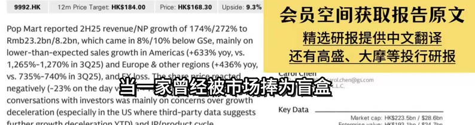
[00:03] 9992.HK / 12mPrice Target:HKs184.00 / Price:HKS168.30 / Upside:9.3% / 会员空间获取报告原文 / PopMartreported2H25revenue/NPgrowthof174%/272%to / Rmb23.2bn/8.2bn,whichcamein8%/10%belowGSe,mainlyon / 精选研报提供中文翻译 / lower-than-expectedsalesgrowthinAmericas(+633%yoy,vs. / 还有高盛、大摩等投行研报 / 1,265%-1,270%in3Q25)andEurope&otherregions（+436%yoy, / vs.735%-740%in3Q25).andFXloss.Thehare / 赛道龙头的公司 / arurCnen / 2-2978-7999carol.chen@gs.com / negatively(-23%onthedayvs.HSI+1%) / fman Sachs (Asia) L.L.C / conversationswithinvestorswasmainlyonconcernsovergrowth / deceleration(especiallyintheUSwherethird-partydatasuggests / KeyData / Marketcap:HKS223.5bn/S28.6bn
[00:06] 9992.HK / 12mPrice Target:HKS184.00 / Price:HKS168.30 / Upside:9.3% / 会员空间获取报告原文 / PopMartreported2H25revenue/NPgrowthof174%/272%to / Rmb23.2bn/8.2bn,whichcamein8%/10%belowGSe,mainlyon / 精选研报提供中文翻译 / lower-than-expectedsalesgrowthinAmericas(+633%yoy,vs. / 还有高盛、大摩等投行研报 / 1,265%-1,270%in3Q25)andEurope&otherregions(+436%yoy， / Vs.735%-740%in3Q25),andFXlo / 在发布亮眼财报的同时 / sharepricereac / 99 |carol.chen(@gs.com / negatively(-23%onthedayvs.Hs / (Asia) L.L.C / conversationswithinvestorswasmainlyonconcernsovergrowth / deceleration(especiallyintheUSwherethird-partydatasuggests / KeyData / Marketcap:HKS223.5bn/$28.6bn
[00:09] 9992.HK / 12mPriceTarget:HKS184.00 / Price:HKS168.30 / Upside:9.3% / 会员空间获取报告原文 / PopMartreported2H25revenue/NPgrowthof174%/272%to / Rmb23.2bn/8.2bn,whichcamein8%/10%belowGSe,mainlyon / 精选研报提供中文翻译 / lower-than-expectedsalesgrowthinAmericas(+633%yoy,vs. / 还有高盛、大摩等投行研报 / 1,265%-1,270%in3Q25)andEurope&otherregions（+436%yoy, / Vs.735%-740%in3Q25 / 却被头部投行下调了评级和目标价 / Lcom / negatively（-23%onth / conversationswithinvestorswasmainlyonconcernsovergrowth / deceleration(especiallyintheUSwherethird-partydatasuggests / KeyData / Marketcap:HKS223.5bn/S28.6bn
[00:12] 9992.HK / 12mPrice Target:HKS184.00 / Price:HKS168.30 / Upside:9.3% / 会员空间获取报告原文 / PopMartreported2H25revenue/NPgrowthof174%/272%to / Rmb23.2bn/8.2bn,whichcamein8%/10%belowGSe,mainlyon / 精选研报提供中文翻译 / lower-than-expectedsalesgrowthinAmericas(+633%yoy,vs. / 还有高盛、大摩等投行研报 / 1,265%-1,270%in3Q25)andEurope&otherregions(+436%yoy, / Vs.735%-740%in3Q25),aRdE / 这背后究竟是增长见顶的信号 / chen@gs.com / negatively（-23%ontheda / conversationswithinvestorswasmainlyonconcernsovergrowth / deceleration(especiallyintheUSwherethird-partydatasuggests / KeyData / Marketcap:HKS223.5bn/S28.6bn
[00:15] 9992.HK / 12mPrice Target:HKS184.00 / Price:HKS168.30 / Upside:9.3% / 会员空间获取报告原文 / PopMartreported2H25revenue/NPgrowthof174%/272%to / Rmb23.2bn/8.2bn,whichcamein8%/10%belowGSe,mainlyon / 精选研报提供中文翻译 / lower-than-expectedsalesgrowthinAmericas(+633%yoy,vs. / 还有高盛、大摩等投行研报 / 1,265%-1,270%in3Q25)andEurope&otherregions(+436%yoy, / Vs.735%-740%in3Q25),andF / 还是市场短期误判的机遇 / carol.chen@ogs.com / negatively(-23%onthedayvs. / a) L.L.C / conversationswithinvestorswasmainlyonconcernsovergrowth / deceleration(especiallyintheUSwherethird-partydatasuggests / KeyData / Marketcap:HKS223.5bn/S28.6bn
[00:18] 9992.HK / 12mPriceTarget:HKs184.00 / Price:HKS168.30 / Upside:9.3% / 会员空间获取报告原文 / PopMartreported2H25revenue/NPgrowthof174%/272%to / Rmb23.2bn/8.2bn,whichcamein8%/10%belowGSe,mainlyon / 精选研报提供中文翻译 / lower-than-expectedsalesgrowthinAmericas(+633%yoy,vs. / 还有高盛、大摩等投行研报 / 1,265%-1,270%in3Q25)andEurope&otherregions(+436%yoy, / Vs.735%-740%in3Q25),andFXlq / 高盛在3月26日发布的 / Iheshase / 999|carol.chen@gs.com / negatively(-23%onthedayvs.HS / (Asia} L.L.C / conversationswithinvestorswasmainlyonconcernsovergrowth / deceleration(especiallyintheUSwherethird-partydatasuggests / KeyData / Marketcap:HKS223.5bn/S28.6bn
[00:21] 9992.HK / 12mPriceTarget:HKs184.00 / Price:HKS168.30 / Upside:9.3% / 会员空间获取报告原文 / PopMartreported2H25revenue/NPgrowthof174%/272%to / Rmb23.2bn/8.2bn,whichcamein8%/10%belowGSe,mainlyon / 精选研报提供中文翻译 / lower-than-expectedsalesgrowthinAmericas(+633%yoy,vs. / 还有高盛、大摩等投行研报 / 1,265%-1,270%in3Q25)andEurope&otherregions（+436%yoy, / Vs.735%-740%in3Q25), / 这份关于泡泡玛特的深度研报 / aruicen / hien@ogs.com / negatively（-23%ontheda / conversationswithinvestorswasmainlyonconcernsovergrowth / deceleration(especiallyintheUSwherethird-partydatasuggests / KeyData / Marketcap:HKS223.5bn/S28.6bn
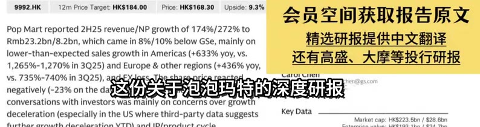
[00:24] 9992.HK / 12mPriceTarget:HKs184.00 / Price:HKS168.30 / Upside:9.3% / 会员空间获取报告原文 / PopMartreported2H25revenue/NPgrowthof174%/272%to / Rmb23.2bn/8.2bn,whichcamein8%/10%belowGSe,mainlyon / 精选研报提供中文翻译 / lower-than-expectedsalesgrowthinAmericas(+633%yoy,vs. / 还有高盛、大摩等投行研报 / 1,265%-1,270%in3Q25)andEurope&otherregions(+436%yoy, / Vs.735%-740%in3Q25), / apd-ExdlossIheshar / 藏着哪些关键信息和投资启示 / chen@ogs.com / negatively(-23%ontheday / conversationswithinvestorswasmainlyonconcernsovergrowth / deceleration(especiallyintheUSwherethird-partydatasuggests / KeyData / Marketcap:HKS223.5bn/$28.6bn
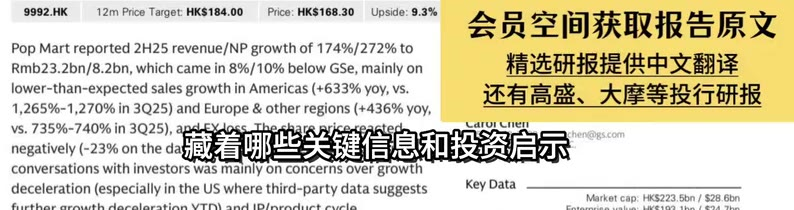
[00:27] 9992.HK / 12mPrice Target:HKS184.00 / Price:HKS168.30 / Upside:9.3% / 会员空间获取报告原文 / PopMartreported2H25revenue/NPgrowthof174%/272%to / Rmb23.2bn/8.2bn,whichcamein8%/10%belowGSe,mainlyon / 精选研报提供中文翻译 / lower-than-expectedsalesgrowthinAmericas(+633%yoy,vs. / 还有高盛、大摩等投行研报 / 1,265%-1,270%in3Q25)andEurope&otherregions(+436%yoy, / Vs.735%-740%in3Q25） / 咱们先来看这份研报的基本信息 / cogs.com / negatively(-23%onthe / conversationswithinvestorswasmainlyonconcernsovergrowth / deceleration(especiallyintheUSwherethird-partydatasuggests / KeyData / Marketcap:HKS223.5bn/$28.6bn
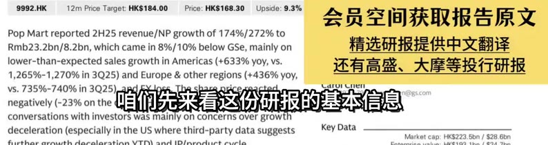
[00:30] 9992.HK / 12mPriceTarget:HKS184.00 / Price:HKS168.30 / Upside:9.3% / 会员空间获取报告原文 / PopMartreported2H25revenue/NPgrowthof174%/272%to / Rmb23.2bn/8.2bn,whichcamein8%/10%belowGSe,mainlyon / 精选研报提供中文翻译 / lower-than-expectedsalesgrowthinAmericas(+633%yoy,vs. / 还有高盛、大摩等投行研报 / 1,265%-1,270%in3Q25)andEurope&otherregions（+436%yoy, / vs.735%-740%in3Q2 / 高盛对泡泡玛特给出的评级是中性 / .COm / negatively(-23%onth / conversationswithinvestorswasmainlyonconcernsovergrowth / deceleration(especiallyintheUSwherethird-partydatasuggests / KeyData / Marketcap:HKS223.5bn/S28.6bn
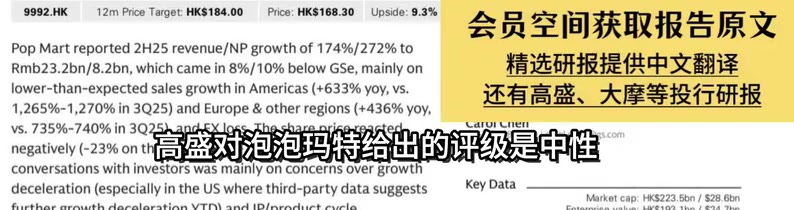
[00:33] 9992.HK / 12mPrice Target:HKS184.00 / Price:HKS168.30 / Upside:9.3% / 会员空间获取报告原文 / PopMartreported2H25revenue/NPgrowthof174%/272%to / Rmb23.2bn/8.2bn,whichcamein8%/10%belowGSe,mainlyon / 精选研报提供中文翻译 / lower-than-expectedsalesgrowthinAmericas(+633%yoy,vs. / 还有高盛、大摩等投行研报 / 1,265%-1,270%in3Q25)andEurope&otherregions（+436%yoy, / vS.735%-740%in3Q25).andFX1oss.Tbe / 自标价为184港元 / carorCnen / 2978-79991carol.chen@gs.com / negatively(-23%onthedayvs.HSI+1% / an Sachs (Asia} L.L.C / conversationswithinvestorswasmainlyonconcernsovergrowth / deceleration(especiallyintheUSwherethird-partydatasuggests / KeyData / Marketcap:HKS223.5bn/S28.6bn
[00:36] 9992.HK / 12mPrice Target:HKS184.00 / Price:HKS168.30 / Upside:9.3% / 会员空间获取报告原文 / PopMartreported2H25revenue/NPgrowthof174%/272%to / Rmb23.2bn/8.2bn,whichcamein8%/10%belowGSe,mainlyon / 精选研报提供中文翻译 / lower-than-expectedsalesgrowthinAmericas(+633%yoy,vs. / 还有高盛、大摩等投行研报 / 1,265%-1,270%in3Q25)andEurope&otherregions(+436%yoy, / VS.735%-740%in / 而当前泡泡玛特的股价是168.30港元 / heshare / aruiCnen / negatively(-23%on / conversationswithinvestorswasmainlyonconcernsovergrowth / deceleration(especiallyintheUSwherethird-partydatasuggests / KeyData / Marketcap:HKS223.5bn/S28.6bn
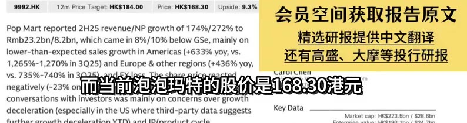
[00:39] 9992.HK / 12mPrice Target:HKS184.00 / Price:HKS168.30 / Upside:9.3% / 会员空间获取报告原文 / PopMartreported2H25revenue/NPgrowthof174%/272%to / Rmb23.2bn/8.2bn,whichcamein8%/10%belowGSe,mainlyon / 精选研报提供中文翻译 / lower-than-expectedsalesgrowthinAmericas(+633%yoy,vs. / 还有高盛、大摩等投行研报 / 1,265%-1,270%in3Q25)andEurope&otherregions(+436%yoy， / VS.735%-740% / 高盛认为公司股价还有9.3%的上涨空间 / negatively(-23% / conversationswithinvestorswasmainlyonconcernsovergrowth / deceleration(especiallyintheUSwherethird-partydatasuggests / KeyData / Market cap:HKS223.5bn/S28.6bn
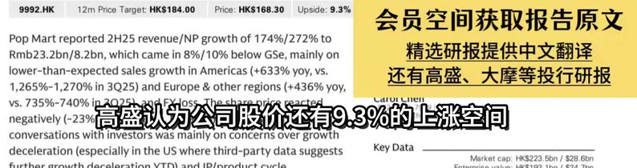
[00:42] 9992.HK / 12mPrice Target:HKS184.00 / Price:HKS168.30 / Upside:9.3% / 会员空间获取报告原文 / PopMartreported2H25revenue/NPgrowthof174%/272%to / Rmb23.2bn/8.2bn,whichcamein8%/10%belowGSe,mainlyon / 精选研报提供中文翻译 / lower-than-expectedsalesgrowthinAmericas(+633%yoy,vs. / 还有高盛、大摩等投行研报 / 1,265%-1,270%in3Q25)andEurope&otherregions(+436%yoy， / VS.735%-740% / 高盛认为公司股价还有9.3%的上涨空间 / negatively(-23% / conversationswithinvestorswasmainlyonconcernsovergrowth / deceleration(especiallyintheUSwherethird-partydatasuggests / KeyData / Market cap:HKS223.5bn/S28.6bn
[00:45] 9992.HK / 12mPrice Target:HKS184.00 / Price:HKS168.30 / Upside:9.3% / 会员空间获取报告原文 / PopMartreported2H25revenue/NPgrowthof174%/272%to / Rmb23.2bn/8.2bn,whichcamein8%/10%belowGSe,mainlyon / 精选研报提供中文翻译 / lower-than-expectedsalesgrowthinAmericas(+633%yoy,vs. / 还有高盛、大摩等投行研报 / 1,265%-1,270%in3Q25)andEurope&otherregions(+436%yoy, / VS.735%-740%in / 这个自标价比之前高盛给出的300港元 / negatively(-23% / conversationswithinvestorswasmainlyonconcernsovergrowth / deceleration(especiallyintheUSwherethird-partydatasuggests / KeyData / Market cap:HKS223.5bn/S28.6bn
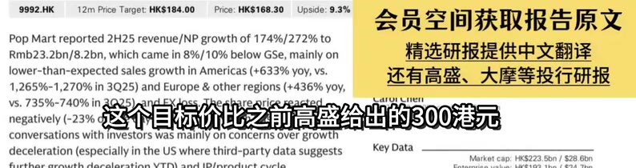
[00:48] 9992.HK / 12mPrice Target:HKS184.00 / Price:HKS168.30 / Upside:9.3% / 会员空间获取报告原文 / PopMartreported2H25revenue/NPgrowthof174%/272%to / Rmb23.2bn/8.2bn,whichcamein8%/10%belowGSe,mainlyon / 精选研报提供中文翻译 / lower-than-expectedsalesgrowthinAmericas(+633%yoy,vs. / 还有高盛、大摩等投行研报 / 1,265%-1,270%in3Q25)andEurope&otherregions（+436%yoy, / vs.735%-740%in3Q25),andFXloss.Theshakenric / 下调了足足39% / arurCnen / 2-2978-7999|carol.chen@ogs.com / negatively(-23%onthedayvs.HSl+1%), / Iman Sachis (Asia) LLC / conversationswithinvestorswasmainlyonconcernsovergrowth / deceleration(especiallyintheUSwherethird-partydatasuggests / KeyData / Marketcap:HKS223.5bn/S28.6bn
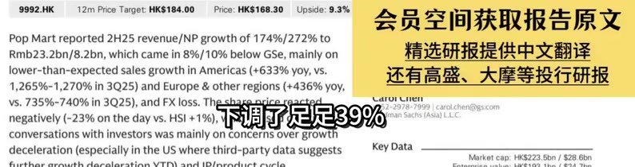
[00:51] 9992.HK / 12mPrice Target:HKS184.00 / Price:HKS168.30 / Upside:9.3% / 会员空间获取报告原文 / PopMartreported2H25revenue/NPgrowthof174%/272%to / Rmb23.2bn/8.2bn,whichcamein8%/10%belowGSe,mainlyon / 精选研报提供中文翻译 / lower-than-expectedsalesgrowthinAmericas(+633%yoy,vs. / 还有高盛、大摩等投行研报 / 1,265%-1,270%in3Q25)andEurope&otherregions(+436%yoy, / VS.735%-7 / 高盛还把2026-2027年的盈利预测下调了18% / negatively / conversationswithinvestorswasmainlyonconcernsovergrowth / deceleration(especiallyintheUSwherethird-partydatasuggests / KeyData / Marketcap:HKS223.5bn/$28.6bn
[00:54] 9992.HK / 12mPrice Target:HKS184.00 / Price:HKS168.30 / Upside:9.3% / 会员空间获取报告原文 / PopMartreported2H25revenue/NPgrowthof174%/272%to / Rmb23.2bn/8.2bn,whichcamein8%/10%belowGSe,mainlyon / 精选研报提供中文翻译 / lower-than-expectedsalesgrowthinAmericas(+633%yoy,vs. / 还有高盛、大摩等投行研报 / 1,265%-1,270%in3Q25)andEurope&otherregions(+436%yoy, / VS.735%-7 / 高盛还把2026-2027年的盈利预测下调了18% / adEXloss.Ihesharepr / negatively / conversationswithinvestorswasmainlyonconcernsovergrowth / deceleration(especiallyintheUSwherethird-partydatasuggests / KeyData / Market cap:HKS223.5bn/S28.6bn
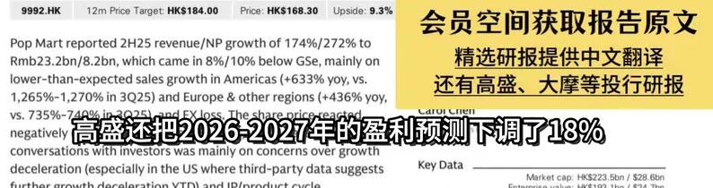
[00:57] 9992.HK / 12mPrice Target:HKS184.00 / Price:HKS168.30 / Upside:9.3% / 会员空间获取报告原文 / PopMartreported2H25revenue/NPgrowthof174%/272%to / Rmb23.2bn/8.2bn,whichcamein8%/10%belowGSe,mainlyon / 精选研报提供中文翻译 / lower-than-expectedsalesgrowthinAmericas(+633%yoy,vs. / 还有高盛、大摩等投行研报 / 1,265%-1,270%in3Q25)andEurope&otherregions(+436%yoy, / VS.735%-740%in30 / 估值倍数也从20倍PE降到了15倍PE / aocnen / negatively(-23%on / conversationswithinvestorswasmainlyonconcernsovergrowth / deceleration(especiallyintheUSwherethird-partydatasuggests / KeyData / Marketcap:HKS223.5bn/S28.6bn
[01:00] 9992.HK / 12mPriceTarget:HKS184.00 / Price:HKS168.30 / Upside:9.3% / 会员空间获取报告原文 / PopMartreported2H25revenue/NPgrowthof174%/272%to / Rmb23.2bn/8.2bn,whichcamein8%/10%belowGSe,mainlyon / 精选研报提供中文翻译 / lower-than-expectedsalesgrowthinAmericas(+633%yoy,vs. / 还有高盛、大摩等投行研报 / 1,265%-1,270%in3Q25)andEurope&otherregions（+436%yoy, / vs.735%-740%in3Q2 / 对标迪士尼一个标准差以下的水平 / pric / ,COIT / negatively(-23%onth / conversationswithinvestorswasmainlyonconcernsovergrowth / deceleration(especiallyintheUSwherethird-partydatasuggests / KeyData / Marketcap:HKS223.5bn/S28.6bn
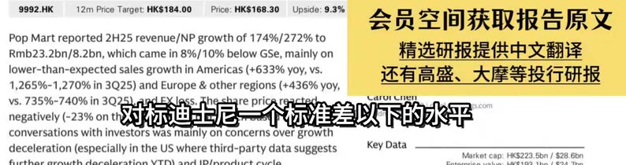
[01:03] 9992.HK / 12mPrice Target:HKS184.00 / Price:HKS168.30 / Upside:9.3% / 会员空间获取报告原文 / PopMartreported2H25revenue/NPgrowthof174%/272%to / Rmb23.2bn/8.2bn,whichcamein8%/10%belowGSe,mainlyon / 精选研报提供中文翻译 / lower-than-expectedsalesgrowthinAmericas(+633%yoy,vs. / 还有高盛、大摩等投行研报 / 1,265%-1,270%in3Q25)andEurope&otherregions(+436%yoy, / Vs.735%-740%in3Q25),andFXl2S5 / 泡泡玛特存在增长放缓 / Theshare / 99 1carol.chen@ogs.com / negatively(-23%onthedayvs.HS / (Asia) L.L.C / conversationswithinvestorswasmainlyonconcernsovergrowth / deceleration(especiallyintheUSwherethird-partydatasuggests / KeyData / Marketcap:HKS223.5bn/S28.6bn
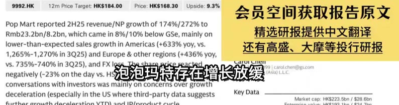
[01:06] 9992.HK / 12mPrice Target:HKS184.00 / Price:HKS168.30 / Upside:9.3% / 会员空间获取报告原文 / PopMartreported2H25revenue/NPgrowthof174%/272%to / Rmb23.2bn/8.2bn,whichcamein8%/10%belowGSe,mainlyon / 精选研报提供中文翻译 / lower-than-expectedsalesgrowthinAmericas(+633%yoy,vs. / 还有高盛、大摩等投行研报 / 1,265%-1,270%in3Q25)andEurope&otherregions（+436%yoy, / vs.735%-740%in3Q25),andFXlossheshar / 和IP动能下降的问题 / arolcnen / 7999 |carol.chen@ogs.com / negatively(-23%onthedayvs.HSl / chs (Asia) L.L.C / conversationswithinvestorswasmainlyonconcernsovergrowth / deceleration(especiallyintheUSwherethird-partydatasuggests / KeyData / Marketcap:HKS223.5bn/S28.6bn
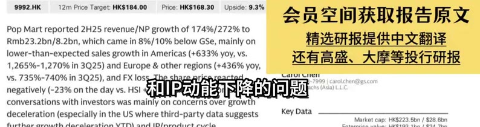
[01:09] 9992.HK / 12mPrice Target:HKS184.00 / Price:HKS168.30 / Upside:9.3% / 会员空间获取报告原文 / PopMartreported2H25revenue/NPgrowthof174%/272%to / Rmb23.2bn/8.2bn,whichcamein8%/10%belowGSe,mainlyon / 精选研报提供中文翻译 / lower-than-expectedsalesgrowthinAmericas(+633%yoy,vs. / 还有高盛、大摩等投行研报 / 1,265%-1,270%in3Q25)andEurope&otherregions(+436%yoy, / vs.735%-740%in3Q / 泡泡玛特2025年下半年的业绩表现 / .com / negatively(-23%ont / conversationswithinvestorswasmainlyonconcernsovergrowth / deceleration(especiallyintheUSwherethird-partydatasuggests / KeyData / Marketcap:HKS223.5bn/$28.6bn
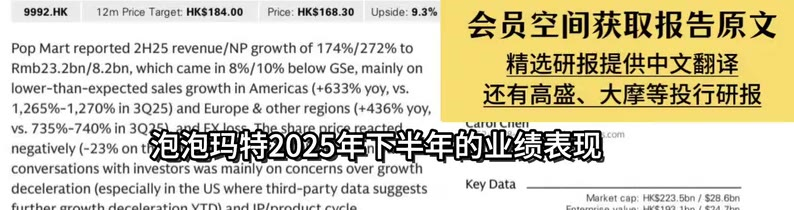
[01:12] 9992.HK / 12mPriceTarget:HKS184.00 / Price:HKS168.30 / Upside:9.3% / 会员空间获取报告原文 / PopMartreported2H25revenue/NPgrowthof174%/272%to / Rmb23.2bn/8.2bn,whichcamein8%/10%belowGSe,mainlyon / 精选研报提供中文翻译 / lower-than-expectedsalesgrowthinAmericas(+633%yoy,vs. / 还有高盛、大摩等投行研报 / 1,265%-1,270%in3Q25)andEurope&otherregions(+436%yoy, / vs.735%-740%in3Q25), / 泡泡玛特2025年下半年的收入 / aare / chen(@gs.com / negatively（-23%onthed / conversationswithinvestorswasmainlyonconcernsovergrowth / deceleration(especiallyintheUSwherethird-partydatasuggests / KeyData / Marketcap:HKS223.5bn/$28.6bn
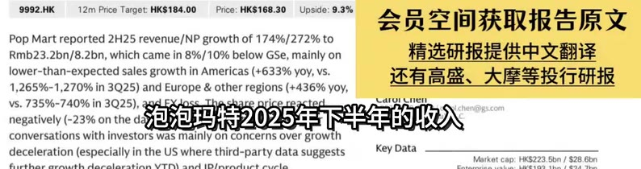
[01:15] 9992.HK / 12mPriceTarget:HKs184.00 / Price:HKS168.30 / Upside:9.3% / 会员空间获取报告原文 / PopMartreported2H25revenue/NPgrowthof174%/272%to / Rmb23.2bn/8.2bn,whichcamein8%/10%belowGSe,mainlyon / 精选研报提供中文翻译 / lower-than-expectedsalesgrowthinAmericas(+633%yoy,vs. / 还有高盛、大摩等投行研报 / 1,265%-1,270%in3Q25)andEurope&otherregions（+436%yoy, / Vs.735%-740%in3Q25),andFXloss / 达到234.4亿人民币 / eshare_pricereac / aroicnen / 8-7999|carol.chen@gs.com / negatively(-23%onthedayvs.HSl+ / Sachs (Asia) L.LC / conversationswithinvestorswasmainlyonconcernsovergrowth / deceleration(especiallyintheUSwherethird-partydatasuggests / KeyData / Marketcap:HKS223.5bn/$28.6bn
[01:18] 9992.HK / 12mPrice Target:HKs184.00 / Price:HKS168.30 / Upside:9.3% / 会员空间获取报告原文 / PopMartreported2H25revenue/NPgrowthof174%/272%to / Rmb23.2bn/8.2bn,whichcamein8%/10%belowGSe,mainlyon / 精选研报提供中文翻译 / lower-than-expectedsalesgrowthinAmericas(+633%yoy,vs. / 还有高盛、大摩等投行研报 / 1,265%-1,270%in3Q25)andEurope&otherregions（+436%yoy, / vs.735%-740%in3Q25),andFXloss.The / 同比增长174% / carorCnen / 352-2978-7999|carol.chen@gs.com / negatively(-23%onthedayvs.HSI+1%) / dman Sachs (Asia) L.L.C / conversationswithinvestorswasmainlyonconcernsovergrowth / deceleration(especiallyintheUSwherethird-partydatasuggests / KeyData / Marketcap:HKS223.5bn/$28.6bn
[01:21] 9992.HK / 12mPrice Target:HKS184.00 / Price:HKS168.30 / Upside:9.3% / 会员空间获取报告原文 / PopMartreported2H25revenue/NPgrowthof174%/272%to / Rmb23.2bn/8.2bn,whichcamein8%/10%belowGSe,mainlyon / 精选研报提供中文翻译 / lower-than-expectedsalesgrowthinAmericas(+633%yoy,vs. / 还有高盛、大摩等投行研报 / 1,265%-1,270%in3Q25)andEurope&otherregions(+436%yoy, / Vs.735%-740%in3Q25),andFXloss. / 净利润82亿人民币 / aroilnen / 978-7999carol.chen@gs.com / negatively(-23%onthedayvs.HSI+19 / Sachs (Asia) L.L.C. / conversationswithinvestorswasmainlyonconcernsovergrowth / deceleration(especiallyintheUSwherethird-partydatasuggests / KeyData / Marketcap:HKS223.5bn/$28.6bn
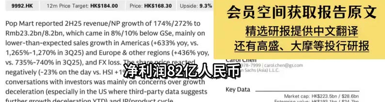
[01:24] 9992.HK / 12mPrice Target:HKS184.00 / Price:HKS168.30 / Upside:9.3% / 会员空间获取报告原文 / PopMartreported2H25revenue/NPgrowthof174%/272%to / Rmb23.2bn/8.2bn,whichcamein8%/10%belowGSe,mainlyon / 精选研报提供中文翻译 / lower-than-expectedsalesgrowthinAmericas(+633%yoy,vs. / 还有高盛、大摩等投行研报 / 1,265%-1,270%in3Q25)andEurope&otherregions（+436%yoy, / vs.735%-740%in3Q25),andFXloss.Thesh / 单从数据上看 / 852-2978-7999carol.chen@0gs.com / caruiCnen / negatively(-23%onthedayvs.HSI+1%), / Goldman Sachs (Asia) L.L.C. / conversationswithinvestorswasmainlyonconcernsovergrowth / deceleration(especiallyintheUSwherethird-partydatasuggests / KeyData / Marketcap:HKS223.5bn/S28.6bn
[01:27] 9992.HK / 12mPrice Target:HKS184.00 / Price:HKS168.30 / Upside:9.3% / 会员空间获取报告原文 / PopMartreported2H25revenue/NPgrowthof174%/272%to / Rmb23.2bn/8.2bn,whichcamein8%/10%belowGSe,mainlyon / 精选研报提供中文翻译 / lower-than-expectedsalesgrowthinAmericas(+633%yoy,vs. / 还有高盛、大摩等投行研报 / 1,265%-1,270%in3Q25)andEurope&otherregions（+436%yoy, / vs.735%-740%in3Q25).andFXloss.Thes / share / 但高盛却指出 / 852-2978-79991carol.chen@0gs.com / caruiCnen / negatively(-23%onthedayvs.HS1+1%), / Goldmian Sachs (Asia) L.L.C. / conversationswithinvestorswasmainlyonconcernsovergrowth / deceleration(especiallyintheUSwherethird-partydatasuggests / KeyData / Marketcap:HKS223.5bn/S28.6bn
[01:30] 9992.HK / 12mPrice Target:HKS184.00 / Price:HKS168.30 / Upside:9.3% / 会员空间获取报告原文 / PopMartreported2H25revenue/NPgrowthof174%/272%to / Rmb23.2bn/8.2bn,whichcamein8%/10%belowGSe,mainlyon / 精选研报提供中文翻译 / lower-than-expectedsalesgrowthinAmericas(+633%yoy,vs. / 还有高盛、大摩等投行研报 / 1,265%-1,270%in3Q25)andEurope&otherregions(+436%yoy, / VS.735%-740%in3Q / 这份业绩低于他们预期的8%到10% / cofm / negatively(-23%on / conversationswithinvestorswasmainlyonconcernsovergrowth / deceleration(especiallyintheUSwherethird-partydatasuggests / KeyData / Marketcap:HKS223.5bn/$28.6bn
[01:33] 9992.HK / 12mPrice Target:HKS184.00 / Price:HKS168.30 / Upside:9.3% / 会员空间获取报告原文 / PopMartreported2H25revenue/NPgrowthof174%/272%to / Rmb23.2bn/8.2bn,whichcamein8%/10%belowGSe,mainlyon / 精选研报提供中文翻译 / lower-than-expectedsalesgrowthinAmericas(+633%yoy,vs. / 还有高盛、大摩等投行研报 / 1,265%-1,270%in3Q25)andEurope&otherregions(+436%yoy, / Vs.735%-740%in3Q25),and / 那为什么会出现这种情况呢 / ol.chen@gs.com / negatively(-23%ontheday / L.C. / conversationswithinvestorswasmainlyonconcernsovergrowth / deceleration(especiallyintheUSwherethird-partydatasuggests / KeyData / Marketcap:HKS223.5bn/$28.6bn
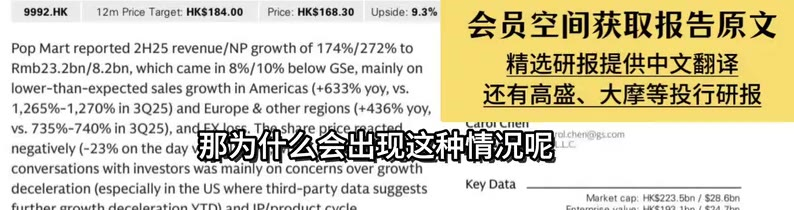
[01:36] 9992.HK / 12mPrice Target:HKS184.00 / Price:HKS168.30 / Upside:9.3% / 会员空间获取报告原文 / PopMartreported2H25revenue/NPgrowthof174%/272%to / Rmb23.2bn/8.2bn,whichcamein8%/10%belowGSe,mainlyon / 精选研报提供中文翻译 / lower-than-expectedsalesgrowthinAmericas(+633%yoy,vs. / 还有高盛、大摩等投行研报 / 1,265%-1,270%in3Q25)andEurope&otherregions(+436%yoy, / Vs.735%-740%in3Q25),andE / 首先是美洲市场的增长放缓 / olchen@ogs.com / negatively（-23%ontheday / .L.C / conversationswithinvestorswasmainlyonconcernsovergrowth / deceleration(especiallyintheUSwherethird-partydatasuggests / KeyData / Marketcap:HKS223.5bn/S28.6bn
[01:39] 9992.HK / 12mPrice Target:HKS184.00 / Price:HKS168.30 / Upside:9.3% / 会员空间获取报告原文 / PopMartreported2H25revenue/NPgrowthof174%/272%to / Rmb23.2bn/8.2bn,whichcamein8%/10%belowGSe,mainlyon / 精选研报提供中文翻译 / lower-than-expectedsalesgrowthinAmericas(+633%yoy,vs. / 还有高盛、大摩等投行研报 / 1,265%-1,270%in3Q25)andEurope&otherregions（+436%yoy, / vs.735%-740%in3Q25).andFXloss.The / 2025年下半年 / share / CarurCnen / 852-2978-7999carol.chen@ogs.com / negatively(-23%onthedayvs.HSI+1%), / Mdman Sachs (Asia) L.L.C. / conversationswithinvestorswasmainlyonconcernsovergrowth / deceleration(especiallyintheUSwherethird-partydatasuggests / KeyData / Marketcap:HKS223.5bn/S28.6bn
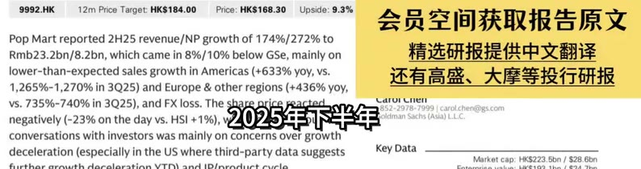
[01:42] 9992.HK / 12mPriceTarget:HKs184.00 / Price:HKS168.30 / Upside:9.3% / 会员空间获取报告原文 / PopMartreported2H25revenue/NPgrowthof174%/272%to / Rmb23.2bn/8.2bn,whichcamein8%/10%belowGSe,mainlyon / 精选研报提供中文翻译 / lower-than-expectedsalesgrowthinAmericas(+633%yoy,vs. / 还有高盛、大摩等投行研报 / 1,265%-1,270%in3Q25)andEurope&otherregions（+436%yoy, / vs.735%-740%in3Q25),andFXk / 美洲市场同比增长633% / aroiCnei / carol.chen@ogs.com / negatively(-23%onthedayvs. / sia) L.L.C. / conversationswithinvestorswasmainlyonconcernsovergrowth / deceleration(especiallyintheUSwherethird-partydatasuggests / KeyData / Marketcap:HKS223.5bn/S28.6bn
[01:45] 9992.HK / 12mPrice Target:HKS184.00 / Price:HKS168.30 / Upside:9.3% / 会员空间获取报告原文 / PopMartreported2H25revenue/NPgrowthof174%/272%to / Rmb23.2bn/8.2bn,whichcamein8%/10%belowGSe,mainlyon / 精选研报提供中文翻译 / lower-than-expectedsalesgrowthinAmericas(+633%yoy,vs. / 还有高盛、大摩等投行研报 / 1,265%-1,270%in3Q25)andEurope&otherregions(+436%yoy, / VS.735%-740%in3 / 这个增速还在1.265%到1,270%之间 / negatively（-23%on / conversationswithinvestorswasmainlyonconcernsovergrowth / deceleration(especiallyintheUSwherethird-partydatasuggests / KeyData / Marketcap:HKS223.5bn/$28.6bn
[01:48] 9992.HK / 12mPrice Target:HKS184.00 / Price:HKS168.30 / Upside:9.3% / 会员空间获取报告原文 / PopMartreported2H25revenue/NPgrowthof174%/272%to / Rmb23.2bn/8.2bn,whichcamein8%/10%belowGSe,mainlyon / 精选研报提供中文翻译 / lower-than-expectedsalesgrowthinAmericas(+633%yoy,vs. / 还有高盛、大摩等投行研报 / 1,265%-1,270%in3Q25)andEurope&otherregions(+436%yoy, / VS.735%-740%in3 / 这个增速还在1.265%到1,270%之间 / negatively（-23%on / conversationswithinvestorswasmainlyonconcernsovergrowth / deceleration(especiallyintheUSwherethird-partydatasuggests / KeyData / Marketcap:HKS223.5bn/$28.6bn
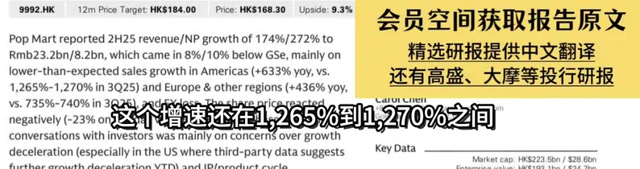
[01:51] 9992.HK / 12mPrice Target:HKs184.00 / Price:HKS168.30 / Upside:9.3% / 会员空间获取报告原文 / PopMartreported2H25revenue/NPgrowthof174%/272%to / Rmb23.2bn/8.2bn,whichcamein8%/10%belowGSe,mainlyon / 精选研报提供中文翻译 / lower-than-expectedsalesgrowthinAmericas(+633%yoy,vs. / 还有高盛、大摩等投行研报 / 1,265%-1,270%in3Q25)andEurope&otherregions（+436%yoy， / vs.735%-740%in3Q25).andFXloss.ThesharA / 其次是欧洲 / +852-2978-79991carol.cheni@gs.com / CarurCnen / negatively(-23%onthedayvs.HSl+1%),whi / Goldman Sachs [Asia} L.LC / conversationswithinvestorswasmainlyonconcernsovergrowth / deceleration(especiallyintheUSwherethird-partydatasuggests / KeyData / Market cap:HKS223.5bn/S28.6bn
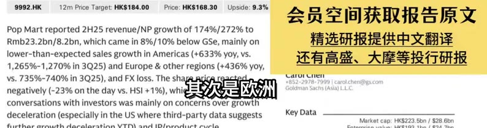
[01:54] 9992.HK / 12mPriceTarget:HKS184.00 / Price:HKS168.30 / Upside:9.3% / 会员空间获取报告原文 / PopMartreported2H25revenue/NPgrowthof174%/272%to / Rmb23.2bn/8.2bn,whichcamein8%/10%belowGSe,mainlyon / 精选研报提供中文翻译 / lower-than-expectedsalesgrowthinAmericas(+633%yoy,vs. / 还有高盛、大摩等投行研报 / 1,265%-1,270%in3Q25)andEurope&otherregions(+436%yoy, / Vs.735%-740%in3Q25） / 及其他地区的增长也出现了放缓 / ogs.com / negatively(-23%onthe / conversationswithinvestorswasmainlyonconcernsovergrowth / deceleration(especiallyintheUSwherethird-partydatasuggests / KeyData / Marketcap:HKS223.5bn/$28.6bn
[01:57] 9992.HK / 12mPrice Target:HKS184.00 / Price:HKS168.30 / Upside:9.3% / 会员空间获取报告原文 / PopMartreported2H25revenue/NPgrowthof174%/272%to / Rmb23.2bn/8.2bn,whichcamein8%/10%belowGSe,mainlyon / 精选研报提供中文翻译 / lower-than-expectedsalesgrowthinAmericas(+633%yoy,vs. / 还有高盛、大摩等投行研报 / 1,265%-1,270%in3Q25)andEurope&otherregions（+436%yoy, / vs.735%-740%in3Q25),andEXlo / 2025年下半年同比增长436% / aroiCnen / chieneogs.com / negatively(-23%ontheday / conversationswithinvestorswasmainlyonconcernsovergrowth / deceleration(especiallyintheUSwherethird-partydatasuggests / KeyData / Marketcap:HKS223.5bn/$28.6bn
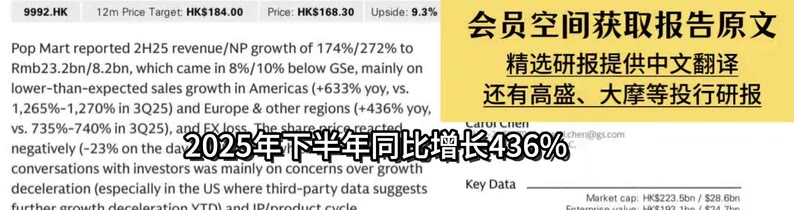
[02:00] 9992.HK / 12mPriceTarget:HKs184.00 / Price:HKS168.30 / Upside:9.3% / 会员空间获取报告原文 / PopMartreported2H25revenue/NPgrowthof174%/272%to / Rmb23.2bn/8.2bn,whichcamein8%/10%belowGSe,mainlyon / 精选研报提供中文翻译 / lower-than-expectedsalesgrowthinAmericas(+633%yoy,vs. / 还有高盛、大摩等投行研报 / 1,265%-1,270%in3Q25)andEurope&otherregions(+436%yoy, / vs.735%-740%in3Q / 而第三季度的增速在735%到740% / .com / negatively（-23%ont / conversationswithinvestorswasmainlyonconcernsovergrowth / deceleration(especiallyintheUSwherethird-partydatasuggests / KeyData / Marketcap:HKS223.5bn/S28.6bn
[02:03] 9992.HK / 12mPrice Target:HKS184.00 / Price:HKS168.30 / Upside:9.3% / 会员空间获取报告原文 / PopMartreported2H25revenue/NPgrowthof174%/272%to / Rmb23.2bn/8.2bn,whichcamein8%/10%belowGSe,mainlyon / 精选研报提供中文翻译 / lower-than-expectedsalesgrowthinAmericas(+633%yoy,vs. / 还有高盛、大摩等投行研报 / 1,265%-1,270%in3Q25)andEurope&otherregions(+436%yoy, / vs.735%-740%in3Q25),andFXloss. / 最后就是汇兑损失 / ioicnen / 978-7999/carol.chen@gs.com / negatively(-23%onthedayvs.HSl+1 / Sachs (Asia} L.L.C / conversationswithinvestorswasmainlyonconcernsovergrowth / deceleration(especiallyintheUSwherethird-partydatasuggests / KeyData / Marketcap:HKS223.5bn/S28.6bn
[02:06] 9992.HK / 12mPriceTarget:HKs184.00 / Price:HKS168.30 / Upside:9.3% / 会员空间获取报告原文 / PopMartreported2H25revenue/NPgrowthof174%/272%to / Rmb23.2bn/8.2bn,whichcamein8%/10%belowGSe,mainlyon / 精选研报提供中文翻译 / lower-than-expectedsalesgrowthinAmericas(+633%yoy,vs. / 还有高盛、大摩等投行研报 / 1,265%-1,270%in3Q25)andEurope&otherregions（+436%yoy, / vs.735%-740%in3Q25).andFXloss. / 造成了一定的影响 / nricereac / aruiCnen / 978-7999carol.chen@gs.com / negatively（-23%onthedayvs.HSl+19 / Sachs (Asia) L.L.C / conversationswithinvestorswasmainlyonconcernsovergrowth / deceleration(especiallyintheUSwherethird-partydatasuggests / KeyData / Marketcap:HKS223.5bn/$28.6bn
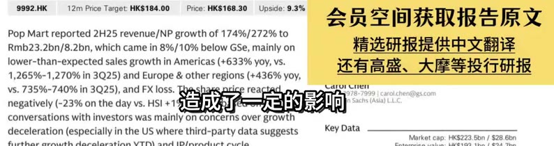
[02:09] 9992.HK / 12mPriceTarget:HKS184.00 / Price:HKS168.30 / Upside:9.3% / 会员空间获取报告原文 / PopMartreported2H25revenue/NPgrowthof174%/272%to / Rmb23.2bn/8.2bn,whichcamein8%/10%belowGSe,mainlyon / 精选研报提供中文翻译 / lower-than-expectedsalesgrowthinAmericas(+633%yoy,vs. / 还有高盛、大摩等投行研报 / 1,265%-1,270%in3Q25)andEurope&otherregions(+436%yoy, / Vs.735%-740%in3Q25） / 不过咱们也不能只看不好的一面 / ogs.com / negatively（-23%onthe / conversationswithinvestorswasmainlyonconcernsovergrowth / deceleration(especiallyintheUSwherethird-partydatasuggests / KeyData / Marketcap:HKS223.5bn/$28.6bn
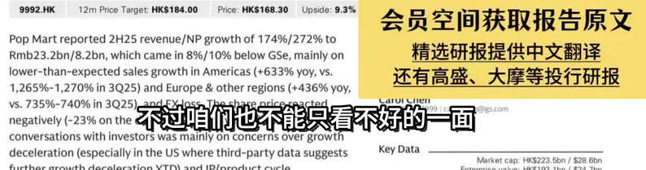
[02:12] 9992.HK / 12mPriceTarget:HKs184.00 / Price:HKS168.30 / Upside:9.3% / 会员空间获取报告原文 / PopMartreported2H25revenue/NPgrowthof174%/272%to / Rmb23.2bn/8.2bn,whichcamein8%/10%belowGSe,mainlyon / 精选研报提供中文翻译 / lower-than-expectedsalesgrowthinAmericas(+633%yoy,vs. / 还有高盛、大摩等投行研报 / 1,265%-1,270%in3Q25)andEurope&otherregions（+436%yoy, / Vs.735%-740%in3Q25),and / 泡泡玛特在一些方面的表现 / oricerea / rol.chen@ogs.com / negatively(-23%ontheday / L.C / conversationswithinvestorswasmainlyonconcernsovergrowth / deceleration(especiallyintheUSwherethird-partydatasuggests / KeyData / Marketcap:HKS223.5bn/$28.6bn
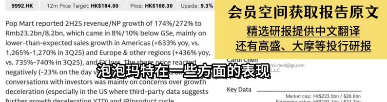
[02:15] 9992.HK / 12mPriceTarget:HKs184.00 / Price:HKS168.30 / Upside:9.3% / 会员空间获取报告原文 / PopMartreported2H25revenue/NPgrowthof174%/272%to / Rmb23.2bn/8.2bn,whichcamein8%/10%belowGSe,mainlyon / 精选研报提供中文翻译 / lower-than-expectedsalesgrowthinAmericas(+633%yoy,vs. / 还有高盛、大摩等投行研报 / 1,265%-1,270%in3Q25)andEurope&otherregions（+436%yoy, / Vs.735%-740%in3Q25),andFXloss / 表现强于高盛的预期 / Thesharepri / aruiCnen / 7999 |carol.chen@gs.com / negatively(-23%onthedayvs.HSl / chs (Asia) L.L.C / conversationswithinvestorswasmainlyonconcernsovergrowth / deceleration(especiallyintheUSwherethird-partydatasuggests / KeyData / Marketcap:HKS223.5bn/S28.6bn
[02:18] 9992.HK / 12mPriceTarget:HKs184.00 / Price:HKS168.30 / Upside:9.3% / 会员空间获取报告原文 / PopMartreported2H25revenue/NPgrowthof174%/272%to / Rmb23.2bn/8.2bn,whichcamein8%/10%belowGSe,mainlyon / 精选研报提供中文翻译 / lower-than-expectedsalesgrowthinAmericas(+633%yoy,vs. / 还有高盛、大摩等投行研报 / 1,265%-1,270%in3Q25)andEurope&otherregions（+436%yoy, / Vs.735%-740%in3Q25),andFX / 比高盛的预期高出了5% / reacted / aruiCneu / carol.chen@ogs.com / negatively(-23%onthedayvs. / sia) L.L.C / conversationswithinvestorswasmainlyonconcernsovergrowth / deceleration(especiallyintheUSwherethird-partydatasuggests / KeyData / Marketcap:HKS223.5bn/S28.6bn
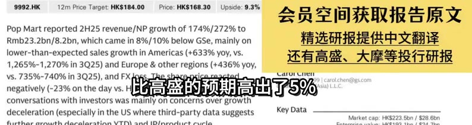
[02:21] 9992.HK / 12mPrice Target:HKS184.00 / Price:HKS168.30 / Upside:9.3% / 会员空间获取报告原文 / PopMartreported2H25revenue/NPgrowthof174%/272%to / Rmb23.2bn/8.2bn,whichcamein8%/10%belowGSe,mainlyon / 精选研报提供中文翻译 / lower-than-expectedsalesgrowthinAmericas(+633%yoy,vs. / 还有高盛、大摩等投行研报 / 1,265%-1,270%in3Q25)andEurope&otherregions(+436%yoy, / vs.735%-740%in3Q2 / 国内市场依然是泡泡玛特的基本盘 / .corm / negatively（-23%onth / conversationswithinvestorswasmainlyonconcernsovergrowth / deceleration(especiallyintheUSwherethird-partydatasuggests / KeyData / Marketcap:HKS223.5bn/$28.6bn
[02:24] 9992.HK / 12mPriceTarget:HKs184.00 / Price:HKS168.30 / Upside:9.3% / 会员空间获取报告原文 / PopMartreported2H25revenue/NPgrowthof174%/272%to / Rmb23.2bn/8.2bn,whichcamein8%/10%belowGSe,mainlyon / 精选研报提供中文翻译 / lower-than-expectedsalesgrowthinAmericas(+633%yoy,vs. / 还有高盛、大摩等投行研报 / 1,265%-1,270%in3Q25)andEurope&otherregions（+436%yoy, / Vs.735%-740%in3Q25),andFx / 消费者对公司的IP和产品 / CC. / cnen / carol.chen@ogs.com / negatively(-23%onthedayvs. / ia) L.L.C / conversationswithinvestorswasmainlyonconcernsovergrowth / deceleration(especiallyintheUSwherethird-partydatasuggests / KeyData / Marketcap:HKS223.5bn/$28.6bn
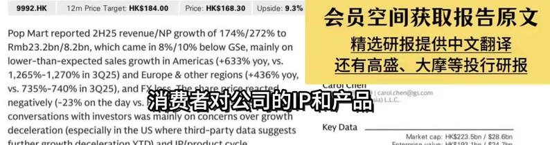
[02:27] 9992.HK / 12mPrice Target:HKS184.00 / Price:HKS168.30 / Upside:9.3% / 会员空间获取报告原文 / PopMartreported2H25revenue/NPgrowthof174%/272%to / Rmb23.2bn/8.2bn,whichcamein8%/10%belowGSe,mainlyon / 精选研报提供中文翻译 / lower-than-expectedsalesgrowthinAmericas(+633%yoy,vs. / 还有高盛、大摩等投行研报 / 1,265%-1,270%in3Q25)andEurope&otherregions(+436%yoy, / Vs.735%-740%in3Q25),andFXloss. / 其次是IP生态方面 / arorcnen / 978-7999|carol.chen@gs.com / negatively(-23%onthedayvs.HSl+19 / in Sachs (Asia) L.L,C / conversationswithinvestorswasmainlyonconcernsovergrowth / deceleration(especiallyintheUSwherethird-partydatasuggests / KeyData / Marketcap:HKS223.5bn/$28.6bn
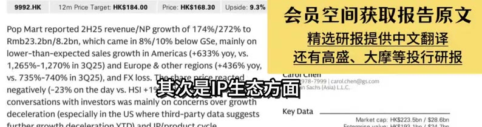
[02:30] 9992.HK / 12mPriceTarget:HKs184.00 / Price:HKS168.30 / Upside:9.3% / 会员空间获取报告原文 / PopMartreported2H25revenue/NPgrowthof174%/272%to / Rmb23.2bn/8.2bn,whichcamein8%/10%belowGSe,mainlyon / 精选研报提供中文翻译 / lower-than-expectedsalesgrowthinAmericas(+633%yoy,vs. / 还有高盛、大摩等投行研报 / 1,265%-1,270%in3Q25)andEurope&otherregions(+436%yoy, / vs.735%-740%in3Q25 / 泡泡玛特的核心iIPtheMonsters / pricereacted / caruiCnen / oigs.com / negatively(-23%onthe / conversationswithinvestorswasmainlyonconcernsovergrowth / deceleration(especiallyintheUSwherethird-partydatasuggests / KeyData / Marketcap:HKS223.5bn/S28.6bn
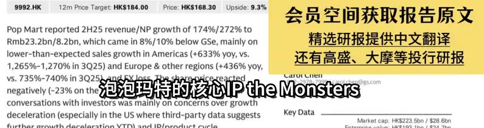
[02:33] 9992.HK / 12mPriceTarget:HKs184.00 / Price:HKS168.30 / Upside:9.3% / 会员空间获取报告原文 / PopMartreported2H25revenue/NPgrowthof174%/272%to / Rmb23.2bn/8.2bn,whichcamein8%/10%belowGSe,mainlyon / 精选研报提供中文翻译 / lower-than-expectedsalesgrowthinAmericas(+633%yoy,vs. / 还有高盛、大摩等投行研报 / 1,265%-1,270%in3Q25)andEurope&otherregions(+436%yoy, / Vs.735%-740%in3Q25), / 也就是level的销售增长了287% / eshare / aruiCnen / n@ogs.com / negatively（-23%onthe / conversationswithinvestorswasmainlyonconcernsovergrowth / deceleration(especiallyintheUSwherethird-partydatasuggests / KeyData / Marketcap:HKS223.5bn/$28.6bn
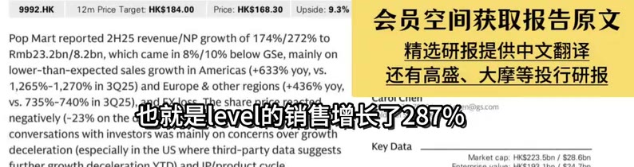
[02:36] 9992.HK / 12mPrice Target:HKs184.00 / Price:HKS168.30 / Upside:9.3% / 会员空间获取报告原文 / PopMartreported2H25revenue/NPgrowthof174%/272%to / Rmb23.2bn/8.2bn,whichcamein8%/10%belowGSe,mainlyon / 精选研报提供中文翻译 / lower-than-expectedsalesgrowthinAmericas(+633%yoy,vs. / 还有高盛、大摩等投行研报 / 1,265%-1,270%in3Q25)andEurope&otherregions（+436%yoy, / vs.735%-740%in3Q25),andFXloss.Thesharepricereacted / +852-2978-7999 1carol.chen@gs.com / CarurCnen / negatively(-23%onthedayvs.HSl+1%),whichbasedonour / Goldman Sachs (Asia) L.L.C / conversationswithinvestorswasmainlyonconcernsovergrowth / deceleration(especiallyintheUSwherethird-partydatasuggests / KeyData / Marketcap:HKS223.5bn/$28.6bn
[02:39] 9992.HK / 12mPrice Target:HKS184.00 / Price:HKS168.30 / Upside:9.3% / 会员空间获取报告原文 / PopMartreported2H25revenue/NPgrowthof174%/272%to / Rmb23.2bn/8.2bn,whichcamein8%/10%belowGSe,mainlyon / 精选研报提供中文翻译 / lower-than-expectedsalesgrowthinAmericas(+633%yoy,vs. / 还有高盛、大摩等投行研报 / 1,265%-1,270%in3Q25)andEurope&otherregions(+436%yoy, / Vs.735%-740%in3Q25),ar / 成为了公司最核心的收入来源 / enogs.com / negatively(-23%ontheday / conversationswithinvestorswasmainlyonconcernsovergrowth / deceleration(especiallyintheUSwherethird-partydatasuggests / KeyData / Marketcap:HKS223.5bn/$28.6bn
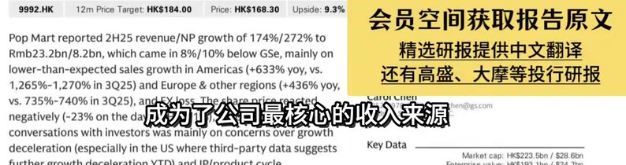
[02:42] 9992.HK / 12mPrice Target:HKs184.00 / Price:HKS168.30 / Upside:9.3% / 会员空间获取报告原文 / PopMartreported2H25revenue/NPgrowthof174%/272%to / Rmb23.2bn/8.2bn,whichcamein8%/10%belowGSe,mainlyon / 精选研报提供中文翻译 / lower-than-expectedsalesgrowthinAmericas(+633%yoy,vs. / 还有高盛、大摩等投行研报 / 1,265%-1,270%in3Q25)andEurope&otherregions（+436%yoy / vs.735%-740%in3Q25),andFXloss.Thesharepricereacted / •852-2978-7999)carol.chen@gs.com / CaruiCnen / negatively(-23%onthedayvs.HSl+1%),whichbasedonour / Goidiman Sachis (Asia) L.L.C. / conversationswithinvestorswasmainlyonconcernsovergrowth / deceleration(especiallyintheUSwherethird-partydatasuggests / KeyData / Market cap:HKS223.5bn/S28.6bn
[02:45] 9992.HK / 12mPrice Target:HKS184.00 / Price:HKS168.30 / Upside:9.3% / 会员空间获取报告原文 / PopMartreported2H25revenue/NPgrowthof174%/272%to / Rmb23.2bn/8.2bn,whichcamein8%/10%belowGSe,mainlyon / 精选研报提供中文翻译 / lower-than-expectedsalesgrowthinAmericas(+633%yoy,vs. / 还有高盛、大摩等投行研报 / 1,265%-1,270%in3Q25)andEurope&otherregions(+436%yoy, / vs.735%-740%in3Q25),andFXloss.Theshareprere / Crybaby增长110% / arurCnen / 78-7999carol.chen@gs.com / negatively(-23%onthedayvs.HSl+ / Sachs (Asia) L.L.C / conversationswithinvestorswasmainlyonconcernsovergrowth / deceleration(especiallyintheUSwherethird-partydatasuggests / KeyData / Marketcap:HKS223.5bn/$28.6bn
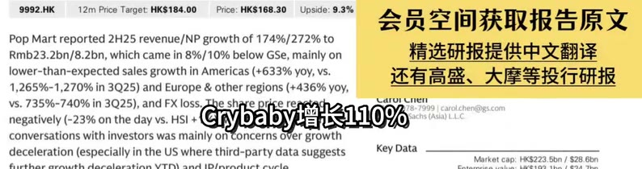
[02:48] 9992.HK / 12mPrice Target:HKS184.00 / Price:HKS168.30 / Upside:9.3% / 会员空间获取报告原文 / PopMartreported2H25revenue/NPgrowthof174%/272%to / Rmb23.2bn/8.2bn,whichcamein8%/10%belowGSe,mainlyon / 精选研报提供中文翻译 / lower-than-expectedsalesgrowthinAmericas(+633%yoy,vs. / 还有高盛、大摩等投行研报 / 1,265%-1,270%in3Q25)andEurope&otherregions(+436%yoy, / vs.735%-740%in3Q25),andFXloss.Theshareprice / Dimo0增长214% / caruiCnen / 2978-7999|carol.chen@gs.com / negatively(-23%onthedayvs.HS1+1% / an Sachs (Asia) L.L.C / conversationswithinvestorswasmainlyonconcernsovergrowth / deceleration(especiallyintheUSwherethird-partydatasuggests / KeyData / Marketcap:HKS223.5bn/$28.6bn
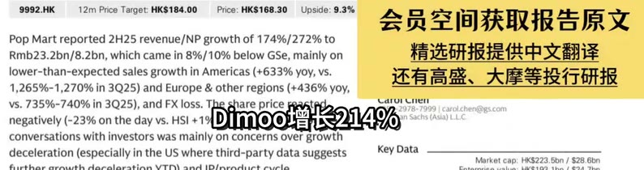
[02:51] 9992.HK / 12mPriceTarget:HKS184.00 / Price:HKS168.30 / Upside:9.3% / 会员空间获取报告原文 / PopMartreported2H25revenue/NPgrowthof174%/272%to / Rmb23.2bn/8.2bn,whichcamein8%/10%belowGSe,mainlyon / 精选研报提供中文翻译 / lower-than-expectedsalesgrowthinAmericas(+633%yoy,vs. / 还有高盛、大摩等投行研报 / 1,265%-1,270%in3Q25)andEurope&otherregions(+436%yoy， / Vs.735%-740%in3Q25） / 这些热门IP的表现也都非常不错 / Theshare / ogs.com / negatively（-23%onthe / conversationswithinvestorswasmainlyonconcernsovergrowth / deceleration(especiallyintheUSwherethird-partydatasuggests / KeyData / Marketcap:HKS223.5bn/S28.6bn
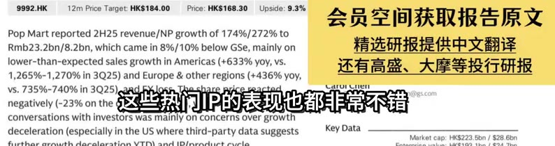
[02:54] 9992.HK / 12mPrice Target:HKs184.00 / Price:HKS168.30 / Upside:9.3% / 会员空间获取报告原文 / PopMartreported2H25revenue/NPgrowthof174%/272%to / Rmb23.2bn/8.2bn,whichcamein8%/10%belowGSe,mainlyon / 精选研报提供中文翻译 / lower-than-expectedsalesgrowthinAmericas(+633%yoy,vs. / 还有高盛、大摩等投行研报 / 1,265%-1,270%in3Q25)andEurope&otherregions（+436%yoy, / vs.735%-740%in3Q25),andFX1oss.The / 同比增长17% / CarorCnei / 852-2978-79991carol.chen@0gs.com / negatively(-23%onthedayvs.HSI+1%), / oldman Sachs (Asia) L.L.C. / conversationswithinvestorswasmainlyonconcernsovergrowth / deceleration(especiallyintheUSwherethird-partydatasuggests / KeyData / Market cap:HKS223.5bn/$28.6bn
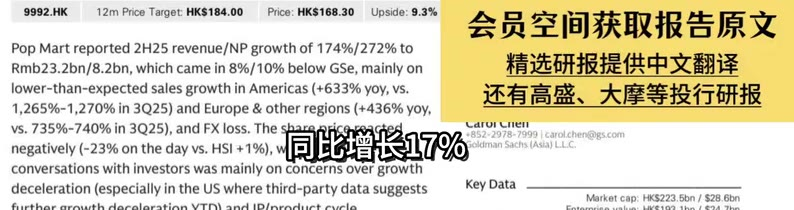
[02:57] 9992.HK / 12mPriceTarget:HKs184.00 / Price:HKS168.30 / Upside:9.3% / 会员空间获取报告原文 / PopMartreported2H25revenue/NPgrowthof174%/272%to / Rmb23.2bn/8.2bn,whichcamein8%/10%belowGSe,mainlyon / 精选研报提供中文翻译 / lower-than-expectedsalesgrowthinAmericas(+633%yoy,vs. / 还有高盛、大摩等投行研报 / 1,265%-1,270%in3Q25)andEurope&otherregions（+436%yoy, / Vs.735%-740%in3Q25),andFX1oss. / 在IP内容开发方面 / Thesharepric / arurCnen / 978-7999carol.chen@ogs.com / negatively（-23%onthedayvs.HSl+19 / in Sachs (Asia) L.L.C / conversationswithinvestorswasmainlyonconcernsovergrowth / deceleration(especiallyintheUSwherethird-partydatasuggests / KeyData / Marketcap:HKS223.5bn/$28.6bn
[03:00] 9992.HK / 12mPriceTarget:HKS184.00 / Price:HKS168.30 / Upside:9.3% / 会员空间获取报告原文 / PopMartreported2H25revenue/NPgrowthof174%/272%to / Rmb23.2bn/8.2bn,whichcamein8%/10%belowGSe,mainlyon / 精选研报提供中文翻译 / lower-than-expectedsalesgrowthinAmericas(+633%yoy,vs. / 还有高盛、大摩等投行研报 / 1,265%-1,270%in3Q25)andEurope&otherregions(+436%yoy, / VS.735%-740%in3Q / ab布已经和索尼影业合作开发电影 / nesbare / negatively(-23%on / conversationswithinvestorswasmainlyonconcernsovergrowth / deceleration(especiallyintheUSwherethird-partydatasuggests / KeyData / Marketcap:HKS223.5bn/S28.6bn
[03:03] 9992.HK / 12mPriceTarget:HKS184.00 / Price:HKS168.30 / Upside:9.3% / 会员空间获取报告原文 / PopMartreported2H25revenue/NPgrowthof174%/272%to / Rmb23.2bn/8.2bn,whichcamein8%/10%belowGSe,mainlyon / 精选研报提供中文翻译 / lower-than-expectedsalesgrowthinAmericas(+633%yoy,vs. / 还有高盛、大摩等投行研报 / 1,265%-1,270%in3Q25)andEurope&otherregions(+436%yoy, / Vs.735%-740%in3Q25 / 同时lab布还将参与2026年fives / s@gs.com / negatively(-23%onthe / conversationswithinvestorswasmainlyonconcernsovergrowth / deceleration(especiallyintheUSwherethird-partydatasuggests / KeyData / Marketcap:HKS223.5bn/S28.6bn
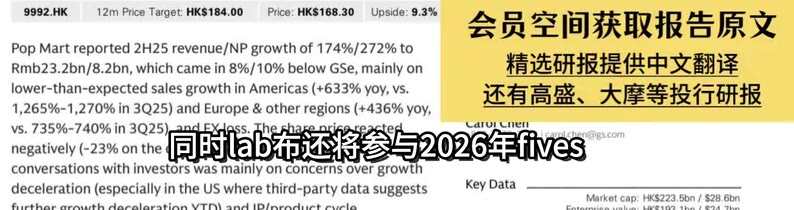
[03:06] 9992.HK / 12mPrice Target:HKS184.00 / Price:HKS168.30 / Upside:9.3% / 会员空间获取报告原文 / PopMartreported2H25revenue/NPgrowthof174%/272%to / Rmb23.2bn/8.2bn,whichcamein8%/10%belowGSe,mainlyon / 精选研报提供中文翻译 / lower-than-expectedsalesgrowthinAmericas(+633%yoy,vs. / 还有高盛、大摩等投行研报 / 1,265%-1,270%in3Q25)andEurope&otherregions(+436%yoy, / VS.735%-740%in30 / 这无疑会进一步提升IP的全球影响力 / he-share / negatively（-23%on / conversationswithinvestorswasmainlyonconcernsovergrowth / deceleration(especiallyintheUSwherethird-partydatasuggests / KeyData / Marketcap:HKS223.5bn/$28.6bn
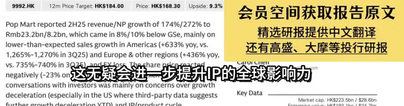
[03:09] 9992.HK / 12mPrice Target:HKs184.00 / Price:HKS168.30 / Upside:9.3% / 会员空间获取报告原文 / PopMartreported2H25revenue/NPgrowthof174%/272%to / Rmb23.2bn/8.2bn,whichcamein8%/10%belowGSe,mainlyon / 精选研报提供中文翻译 / lower-than-expectedsalesgrowthinAmericas(+633%yoy,vs. / 还有高盛、大摩等投行研报 / 1,265%-1,270%in3Q25)andEurope&otherregions（+436%yoy, / vs.735%-740%in3Q25),andFXloss.Thesharepricereacted / 852-2978-79991carol.chen@gs.com / CarurCnen / negatively(-23%onthedayvs.HSl+1%),whichbasedonour / Goldman Sachs (Asia) L.L.C / conversationswithinvestorswasmainlyonconcernsovergrowth / deceleration(especiallyintheUSwherethird-partydatasuggests / KeyData / Market cap:HKS223.5bn/$28.6bn
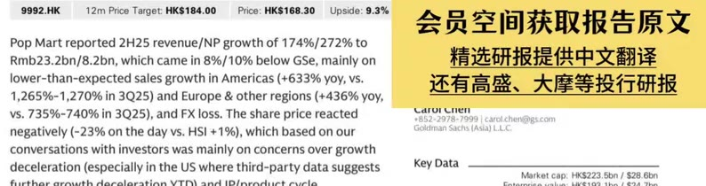
[03:12] 9992.HK / 12mPriceTarget:HKs184.00 / Price:HKS168.30 / Upside:9.3% / 会员空间获取报告原文 / PopMartreported2H25revenue/NPgrowthof174%/272%to / Rmb23.2bn/8.2bn,whichcamein8%/10%belowGSe,mainlyon / 精选研报提供中文翻译 / lower-than-expectedsalesgrowthinAmericas(+633%yoy,vs. / 还有高盛、大摩等投行研报 / 1,265%-1,270%in3Q25)andEurope&otherregions（+436%yoy, / Vs.735%-740%in3Q25),and / 泡泡玛特也发生了一些变化 / ol.chen@pgs.com / negatively(-23%ontheday / .LC / conversationswithinvestorswasmainlyonconcernsovergrowth / deceleration(especiallyintheUSwherethird-partydatasuggests / KeyData / Marketcap:HKS223.5bn/$28.6bn
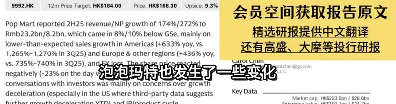
[03:15] 9992.HK / 12mPrice Target:HKS184.00 / Price:HKS168.30 / Upside:9.3% / 会员空间获取报告原文 / PopMartreported2H25revenue/NPgrowthof174%/272%to / Rmb23.2bn/8.2bn,whichcamein8%/10%belowGSe,mainlyon / 精选研报提供中文翻译 / lower-than-expectedsalesgrowthinAmericas(+633%yoy,vs. / 还有高盛、大摩等投行研报 / 1,265%-1,270%in3Q25)andEurope&otherregions(+436%yoy， / Vs.735%-740%in3Q25),andFX / 毛绒玩具持续爆发式增长 / carol.chen@ogs.com / negatively(-23%onthedayvs. / a) L.L.C / conversationswithinvestorswasmainlyonconcernsovergrowth / deceleration(especiallyintheUSwherethird-partydatasuggests / KeyData / Marketcap:HKS223.5bn/S28.6bn
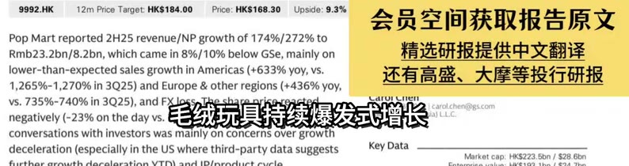
[03:18] 9992.HK / 12mPrice Target:HKs184.00 / Price:HKS168.30 / Upside:9.3% / 会员空间获取报告原文 / PopMartreported2H25revenue/NPgrowthof174%/272%to / Rmb23.2bn/8.2bn,whichcamein8%/10%belowGSe,mainlyon / 精选研报提供中文翻译 / lower-than-expectedsalesgrowthinAmericas(+633%yoy,vs. / 还有高盛、大摩等投行研报 / 1,265%-1,270%in3Q25)andEurope&otherregions（+436%yoy, / vs.735%-740%in3Q25).andFXloss.The / 同比增长427% / LarurCnen / 352-2978-79991carol.chen@0gs.com / negatively(-23%onthedayvs.HSI+1%) / dman Sachs (Asia) L.L.C / conversationswithinvestorswasmainlyonconcernsovergrowth / deceleration(especiallyintheUSwherethird-partydatasuggests / KeyData / Marketcap:HKS223.5bn/S28.6bn
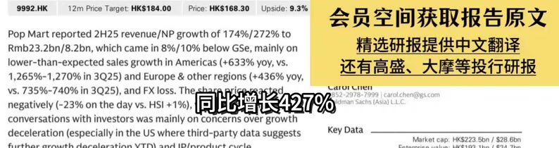
[03:21] 9992.HK / 12mPrice Target:HKS184.00 / Price:HKS168.30 / Upside:9.3% / 会员空间获取报告原文 / PopMartreported2H25revenue/NPgrowthof174%/272%to / Rmb23.2bn/8.2bn,whichcamein8%/10%belowGSe,mainlyon / 精选研报提供中文翻译 / lower-than-expectedsalesgrowthinAmericas(+633%yoy,vs. / 还有高盛、大摩等投行研报 / 1,265%-1,270%in3Q25)andEurope&otherregions（+436%yoy, / vs.735%-740%in3Q25),andFXlos / 贡献了54%的销售额 / uruicnen / 7999|carol.chen@ogs.com / negatively(-23%onthedayvs.HSl / chs (Asia) L.L.C / conversationswithinvestorswasmainlyonconcernsovergrowth / deceleration(especiallyintheUSwherethird-partydatasuggests / KeyData / Marketcap:HKS223.5bn/$28.6bn
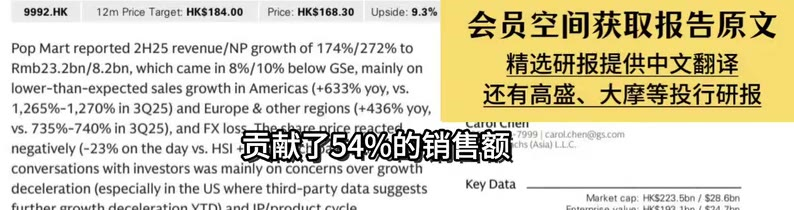
[03:24] 9992.HK / 12mPrice Target:HKS184.00 / Price:HKS168.30 / Upside:9.3% / 会员空间获取报告原文 / PopMartreported2H25revenue/NPgrowthof174%/272%to / Rmb23.2bn/8.2bn,whichcamein8%/10%belowGSe,mainlyon / 精选研报提供中文翻译 / lower-than-expectedsalesgrowthinAmericas(+633%yoy,vs. / 还有高盛、大摩等投行研报 / 1,265%-1,270%in3Q25)andEurope&otherregions（+436%yoy, / Vs.735%-740%in3Q25),andFXl / 已经超过了手办类产品 / arorCnen / 999|carol.chen@ogs.com / negatively(-23%onthedayvs.HS / (Asia) L.L.C / conversationswithinvestorswasmainlyonconcernsovergrowth / deceleration(especiallyintheUSwherethird-partydatasuggests / KeyData / Marketcap:HKS223.5bn/$28.6bn
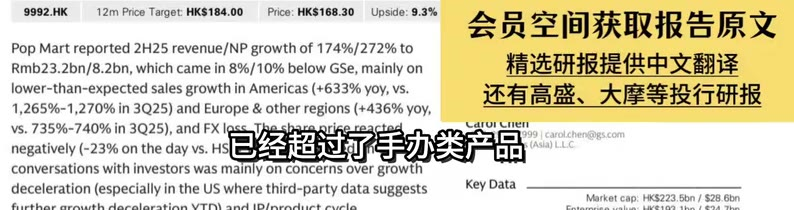
[03:27] 9992.HK / 12mPriceTarget:HKs184.00 / Price:HKS168.30 / Upside:9.3% / 会员空间获取报告原文 / PopMartreported2H25revenue/NPgrowthof174%/272%to / Rmb23.2bn/8.2bn,whichcamein8%/10%belowGSe,mainlyon / 精选研报提供中文翻译 / lower-than-expectedsalesgrowthinAmericas(+633%yoy,vs. / 还有高盛、大摩等投行研报 / 1,265%-1,270%in3Q25)andEurope&otherregions(+436%yoy, / Vs.735%-740%in3Q25), / 手办类产品星然也增长了60% / aoilnel / chen@ogs.com / negatively（-23%ontheda / conversationswithinvestorswasmainlyonconcernsovergrowth / deceleration(especiallyintheUSwherethird-partydatasuggests / KeyData / Marketcap:HKS223.5bn/$28.6bn
[03:30] 9992.HK / 12mPrice Target:HKS184.00 / Price:HKS168.30 / Upside:9.3% / 会员空间获取报告原文 / PopMartreported2H25revenue/NPgrowthof174%/272%to / Rmb23.2bn/8.2bn,whichcamein8%/10%belowGSe,mainlyon / 精选研报提供中文翻译 / lower-than-expectedsalesgrowthinAmericas(+633%yoy,vs. / 还有高盛、大摩等投行研报 / 1,265%-1,270%in3Q25)andEurope&otherregions（+436%yoy, / Vs.735%-740%in3Q25),andFXlos / 但占比包经降至29% / aruiCnen / -79991carol.chen@ogs.com / negatively(-23%onthedayvs.HSl / chs (Asia) L.L.C / conversationswithinvestorswasmainlyonconcernsovergrowth / deceleration(especiallyintheUSwherethird-partydatasuggests / KeyData / Marketcap:HKS223.5bn/$28.6bn
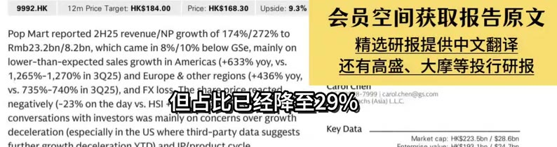
[03:33] 9992.HK / 12mPriceTarget:HKS184.00 / Price:HKS168.30 / Upside:9.3% / 会员空间获取报告原文 / PopMartreported2H25revenue/NPgrowthof174%/272%to / Rmb23.2bn/8.2bn,whichcamein8%/10%belowGSe,mainlyon / 精选研报提供中文翻译 / lower-than-expectedsalesgrowthinAmericas(+633%yoy,vs. / 还有高盛、大摩等投行研报 / 1,265%-1,270%in3Q25)andEurope&otherregions(+436%yoy， / vs.735%-740%in3Q2 / 而Mega产品则出现了17%的下滑 / loss. / gs.com / negatively（-23%onthe / conversationswithinvestorswasmainlyonconcernsovergrowth / deceleration(especiallyintheUSwherethird-partydatasuggests / KeyData / Marketcap:HKS223.5bn/$28.6bn
[03:36] 9992.HK / 12mPrice Target:HKS184.00 / Price:HKS168.30 / Upside:9.3% / 会员空间获取报告原文 / PopMartreported2H25revenue/NPgrowthof174%/272%to / Rmb23.2bn/8.2bn,whichcamein8%/10%belowGSe,mainlyon / 精选研报提供中文翻译 / lower-than-expectedsalesgrowthinAmericas(+633%yoy,vs. / 还有高盛、大摩等投行研报 / 1,265%-1,270%in3Q25)andEurope&otherregions(+436%yoy, / vs.735%-740%in3Q25 / 这说明消费者的偏好正在发生变化 / .com / negatively(-23%onth / conversationswithinvestorswasmainlyonconcernsovergrowth / deceleration(especiallyintheUSwherethird-partydatasuggests / KeyData / Marketcap:HKS223.5bn/S28.6bn
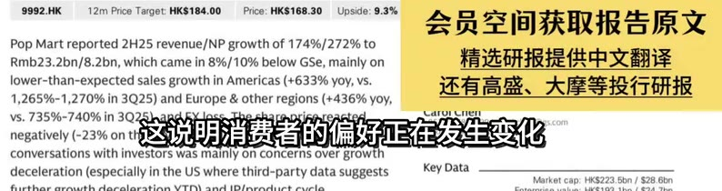
[03:39] 9992.HK / 12mPrice Target:HKs184.00 / Price:HKS168.30 / Upside:9.3% / 会员空间获取报告原文 / PopMartreported2H25revenue/NPgrowthof174%/272%to / Rmb23.2bn/8.2bn,whichcamein8%/10%belowGSe,mainlyon / 精选研报提供中文翻译 / lower-than-expectedsalesgrowthinAmericas(+633%yoy,vs. / 还有高盛、大摩等投行研报 / 1,265%-1,270%in3Q25)andEurope&otherregions(+436%yoy, / Vs.735%-740%in3Q25),anEXs / 也在及时调整自包的产品结构 / hen@ogs.com / negatively(-23%ontheda / conversationswithinvestorswasmainlyonconcernsovergrowth / deceleration(especiallyintheUSwherethird-partydatasuggests / KeyData / Market cap:HKS223.5bn/$28.6bn
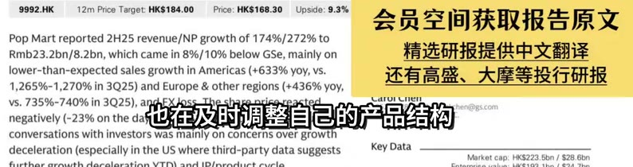
[03:42] 9992.HK / 12mPriceTarget:HKs184.00 / Price:HKS168.30 / Upside:9.3% / 会员空间获取报告原文 / PopMartreported2H25revenue/NPgrowthof174%/272%to / Rmb23.2bn/8.2bn,whichcamein8%/10%belowGSe,mainlyon / 精选研报提供中文翻译 / lower-than-expectedsalesgrowthinAmericas(+633%yoy,vs. / 还有高盛、大摩等投行研报 / 1,265%-1,270%in3Q25)andEurope&otherregions（+436%yoy, / vs.735%-740%in3Q25).andFX1oss. / 来适应市场的需求 / heshare / aroicnen / 978-7999|carol.chen@gs.com / negatively（-23%onthedayvs.HSl+1 / Sachs (Asia) L.L.C / conversationswithinvestorswasmainlyonconcernsovergrowth / deceleration(especiallyintheUSwherethird-partydatasuggests / KeyData / Marketcap:HKS223.5bn/$28.6bn
[03:45] 9992.HK / 12mPrice Target:HKS184.00 / Price:HKS168.30 / Upside:9.3% / 会员空间获取报告原文 / PopMartreported2H25revenue/NPgrowthof174%/272%to / Rmb23.2bn/8.2bn,whichcamein8%/10%belowGSe,mainlyon / 精选研报提供中文翻译 / lower-than-expectedsalesgrowthinAmericas(+633%yoy,vs. / 还有高盛、大摩等投行研报 / 1,265%-1,270%in3Q25)andEurope&otherregions（+436%yoy, / vs.735%-740%in3Q25),and / 一直是泡泡玛特重点布局的方向 / ogs.com / negatively(-23%onthe / conversationswithinvestorswasmainlyonconcernsovergrowth / deceleration(especiallyintheUSwherethird-partydatasuggests / KeyData / Marketcap:HKS223.5bn/S28.6bn
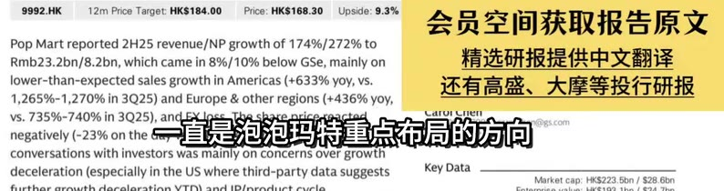
[03:48] 9992.HK / 12mPrice Target:HKS184.00 / Price:HKS168.30 / Upside:9.3% / 会员空间获取报告原文 / PopMartreported2H25revenue/NPgrowthof174%/272%to / Rmb23.2bn/8.2bn,whichcamein8%/10%belowGSe,mainlyon / 精选研报提供中文翻译 / lower-than-expectedsalesgrowthinAmericas(+633%yoy,vs. / 还有高盛、大摩等投行研报 / 1,265%-1,270%in3Q25)andEurope&otherregions(+436%yoy, / vs.735%-740%in3Q2 / 高盛也对泡泡玛特的海外市场战略 / .com / negatively(-23%onth / conversationswithinvestorswasmainlyonconcernsovergrowth / deceleration(especiallyintheUSwherethird-partydatasuggests / KeyData / Marketcap:HKS223.5bn/S28.6bn
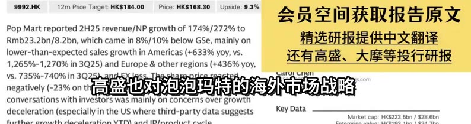
[03:51] 9992.HK / 12mPrice Target:HKS184.00 / Price:HKS168.30 / Upside:9.3% / 会员空间获取报告原文 / PopMartreported2H25revenue/NPgrowthof174%/272%to / Rmb23.2bn/8.2bn,whichcamein8%/10%belowGSe,mainlyon / 精选研报提供中文翻译 / lower-than-expectedsalesgrowthinAmericas(+633%yoy,vs. / 还有高盛、大摩等投行研报 / 1,265%-1,270%in3Q25)andEurope&otherregions(+436%yoy, / VS.735%-740%in / 自前泡泡玛特在中国大陆有445家门店 / aroiCnen / negatively(-23% / conversationswithinvestorswasmainlyonconcernsovergrowth / deceleration(especiallyintheUSwherethird-partydatasuggests / KeyData / Marketcap:HKS223.5bn/$28.6bn
[03:54] 9992.HK / 12mPrice Target:HKS184.00 / Price:HKS168.30 / Upside:9.3% / 会员空间获取报告原文 / PopMartreported2H25revenue/NPgrowthof174%/272%to / Rmb23.2bn/8.2bn,whichcamein8%/10%belowGSe,mainlyon / 精选研报提供中文翻译 / lower-than-expectedsalesgrowthinAmericas(+633%yoy,vs. / 还有高盛、大摩等投行研报 / 1,265%-1,270%in3Q25)andEurope&otherregions（+436%yoy, / Vs.735%-740%in3Q25),andFXloss. / 海外有185家门店 / AruiCnen / 978-7999carol.chen@ogs.com / negatively(-23%onthedayvs.HSI+19 / an Sachs (Asia) L.L.C / conversationswithinvestorswasmainlyonconcernsovergrowth / deceleration(especiallyintheUSwherethird-partydatasuggests / KeyData / Marketcap:HKS223.5bn/S28.6bn
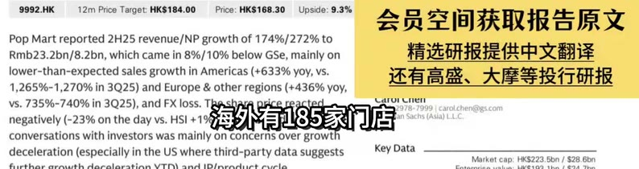
[03:57] 9992.HK / 12mPriceTarget:HKS184.00 / Price:HKS168.30 / Upside:9.3% / 会员空间获取报告原文 / PopMartreported2H25revenue/NPgrowthof174%/272%to / Rmb23.2bn/8.2bn,whichcamein8%/10%belowGSe,mainlyon / 精选研报提供中文翻译 / lower-than-expectedsalesgrowthinAmericas(+633%yoy,vs. / 还有高盛、大摩等投行研报 / 1,265%-1,270%in3Q25)andEurope&otherregions（+436%yoy, / vs.735%-740%in3Q2 / 海外线上销售额已经超过了零售店 / pris / .com / negatively(-23%onth / conversationswithinvestorswasmainlyonconcernsovergrowth / deceleration(especiallyintheUSwherethird-partydatasuggests / KeyData / Marketcap:HKS223.5bn/S28.6bn
[04:00] 9992.HK / 12mPrice Target:HKS184.00 / Price:HKS168.30 / Upside:9.3% / 会员空间获取报告原文 / PopMartreported2H25revenue/NPgrowthof174%/272%to / Rmb23.2bn/8.2bn,whichcamein8%/10%belowGSe,mainlyon / 精选研报提供中文翻译 / lower-than-expectedsalesgrowthinAmericas(+633%yoy,vs. / 还有高盛、大摩等投行研报 / 1,265%-1,270%in3Q25)andEurope&otherregions（+436%yoy， / vs.735%-740%in3Q25),andFXloss.Theshar / 从长期来看 / 852-2978-79991carol.chen@gs.com / CarurCnei / negatively(-23%onthedayvs.HSI+1%),whig / Goldnian Sachs (Asia] L.L.C / conversationswithinvestorswasmainlyonconcernsovergrowth / deceleration(especiallyintheUSwherethird-partydatasuggests / KeyData / Market cap:HKS223.5bn/S28.6bn
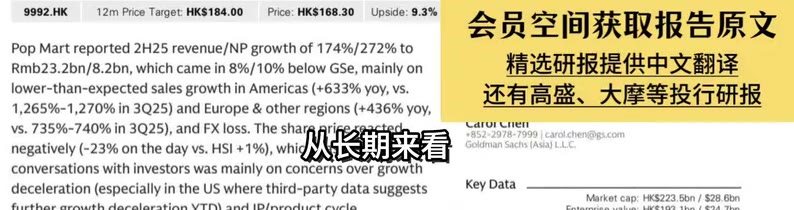
[04:03] 9992.HK / 12mPriceTarget:HKs184.00 / Price:HKS168.30 / Upside:9.3% / 会员空间获取报告原文 / PopMartreported2H25revenue/NPgrowthof174%/272%to / Rmb23.2bn/8.2bn,whichcamein8%/10%belowGSe,mainlyon / 精选研报提供中文翻译 / lower-than-expectedsalesgrowthinAmericas(+633%yoy,vs. / 还有高盛、大摩等投行研报 / 1,265%-1,270%in3Q25)andEurope&otherregions(+436%yoy, / vs.735%-740%in3Q25),andFX / 泡泡玛特计划在2026年 / Theshare / arurCnei / 99|carol.chen(@gs.com / negatively(-23%onthedayvs.H / Asia} L.L.C / conversationswithinvestorswasmainlyonconcernsovergrowth / deceleration(especiallyintheUSwherethird-partydatasuggests / KeyData / Marketcap:HKs223.5bn/S28.6bn
[04:06] 9992.HK / 12mPrice Target:HKS184.00 / Price:HKS168.30 / Upside:9.3% / 会员空间获取报告原文 / PopMartreported2H25revenue/NPgrowthof174%/272%to / Rmb23.2bn/8.2bn,whichcamein8%/10%belowGSe,mainlyon / 精选研报提供中文翻译 / lower-than-expectedsalesgrowthinAmericas(+633%yoy,vs. / 还有高盛、大摩等投行研报 / 1,265%-1,270%in3Q25)andEurope&otherregions(+436%yoy, / vs.735%-740%in3Q25),andEXloshsha / 在美国市场突破100家门店 / arol.chen@ogs.com / negatively（-23%onthedayvs / L.L.C. / conversationswithinvestorswasmainlyonconcernsovergrowth / deceleration(especiallyintheUSwherethird-partydatasuggests / KeyData / Marketcap:HKS223.5bn/$28.6bn
[04:09] 9992.HK / 12mPrice Target:HKS184.00 / Price:HKS168.30 / Upside:9.3% / 会员空间获取报告原文 / PopMartreported2H25revenue/NPgrowthof174%/272%to / Rmb23.2bn/8.2bn,whichcamein8%/10%belowGSe,mainlyon / 精选研报提供中文翻译 / lower-than-expectedsalesgrowthinAmericas(+633%yoy,vs. / 还有高盛、大摩等投行研报 / 1,265%-1,270%in3Q25)andEurope&otherregions(+436%yoy, / vs.735%-740%in3Q25 / 包括时代广场和第五大道的旗舰店 / negatively（-23%onth / conversationswithinvestorswasmainlyonconcernsovergrowth / deceleration(especiallyintheUSwherethird-partydatasuggests / KeyData / Marketcap:HKS223.5bn/S28.6bn
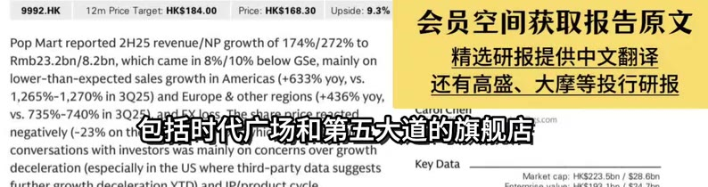
[04:12] 9992.HK / 12mPrice Target:HKS184.00 / Price:HKS168.30 / Upside:9.3% / 会员空间获取报告原文 / PopMartreported2H25revenue/NPgrowthof174%/272%to / Rmb23.2bn/8.2bn,whichcamein8%/10%belowGSe,mainlyon / 精选研报提供中文翻译 / lower-than-expectedsalesgrowthinAmericas(+633%yoy,vs. / 还有高盛、大摩等投行研报 / 1,265%-1,270%in3Q25)andEurope&otherregions(+436%yoy, / Vs.735%-740%in3Q25),ar / 公司在美国市场的品牌知名度 / enogs.com / negatively(-23%ontheda / conversationswithinvestorswasmainlyonconcernsovergrowth / deceleration(especiallyintheUSwherethird-partydatasuggests / KeyData / Marketcap:HKS223.5bn/S28.6bn
[04:15] 9992.HK / 12mPriceTarget:HKs184.00 / Price:HKS168.30 / Upside:9.3% / 会员空间获取报告原文 / PopMartreported2H25revenue/NPgrowthof174%/272%to / Rmb23.2bn/8.2bn,whichcamein8%/10%belowGSe,mainlyon / 精选研报提供中文翻译 / lower-than-expectedsalesgrowthinAmericas(+633%yoy,vs. / 还有高盛、大摩等投行研报 / 1,265%-1,270%in3Q25)andEurope&otherregions（+436%yoy, / Vs.735%-740%in3Q25） / 同时泡泡玛特还在通过规模经济 / heshare / ogs.com / negatively(-23%onthe / conversationswithinvestorswasmainlyonconcernsovergrowth / deceleration(especiallyintheUSwherethird-partydatasuggests / KeyData / Marketcap:HKS223.5bn/S28.6bn
[04:18] 9992.HK / 12mPrice Target:HKS184.00 / Price:HKS168.30 / Upside:9.3% / 会员空间获取报告原文 / PopMartreported2H25revenue/NPgrowthof174%/272%to / Rmb23.2bn/8.2bn,whichcamein8%/10%belowGSe,mainlyon / 精选研报提供中文翻译 / lower-than-expectedsalesgrowthinAmericas(+633%yoy,vs. / 还有高盛、大摩等投行研报 / 1,265%-1,270%in3Q25)andEurope&otherregions(+436%yoy, / vs.735%-740%in3Q25).andFXloss.Thehare / 数字供应链投资 / arurCnen / -2978-7999carol.chen@0gs.com / negatively(-23%onthedayvs.HSI+1%） / man Sachs (Asia} LLC / conversationswithinvestorswasmainlyonconcernsovergrowth / deceleration(especiallyintheUSwherethird-partydatasuggests / KeyData / Marketcap:HKS223.5bn/S28.6bn
[04:21] 9992.HK / 12mPrice Target:HKs184.00 / Price:HKS168.30 / Upside:9.3% / 会员空间获取报告原文 / PopMartreported2H25revenue/NPgrowthof174%/272%to / Rmb23.2bn/8.2bn,whichcamein8%/10%belowGSe,mainlyon / 精选研报提供中文翻译 / lower-than-expectedsalesgrowthinAmericas(+633%yoy,vs. / 还有高盛、大摩等投行研报 / 1,265%-1,270%in3Q25)andEurope&otherregions（+436%yoy, / vs.735%-740%in3Q25).andFXloss.Thes / 来优化供应链 / caruiCnen / 852-2978-7999carol.chen@gs.com / negatively(-23%onthedayvs.HSI+1%), / oldmian Sachs (Asia] LLC / conversationswithinvestorswasmainlyonconcernsovergrowth / deceleration(especiallyintheUSwherethird-partydatasuggests / KeyData / Market cap:HKS223.5bn/S28.6bn
[04:24] 9992.HK / 12mPrice Target:HKs184.00 / Price:HKS168.30 / Upside:9.3% / 会员空间获取报告原文 / PopMartreported2H25revenue/NPgrowthof174%/272%to / Rmb23.2bn/8.2bn,whichcamein8%/10%belowGSe,mainlyon / 精选研报提供中文翻译 / lower-than-expectedsalesgrowthinAmericas(+633%yoy,vs. / 还有高盛、大摩等投行研报 / 1,265%-1,270%in3Q25)andEurope&otherregions（+436%yoy, / vs.735%-740%in3Q25),andFXloss.Thesharepricereacted / +852-2978-79991carol.chen@0gs.com / CaruiCnen / negatively(-23%onthedayvs.HSI+1%),whichbasedonour / Goldman Sachs (Asia) L.L.C. / conversationswithinvestorswasmainlyonconcernsovergrowth / deceleration(especiallyintheUSwherethird-partydatasuggests / KeyData / Market cap:HKS223.5bn/S28.6bn
[04:27] 9992.HK / 12mPriceTarget:HKs184.00 / Price:HKS168.30 / Upside:9.3% / 会员空间获取报告原文 / PopMartreported2H25revenue/NPgrowthof174%/272%to / Rmb23.2bn/8.2bn,whichcamein8%/10%belowGSe,mainlyon / 精选研报提供中文翻译 / lower-than-expectedsalesgrowthinAmericas(+633%yoy,vs. / 还有高盛、大摩等投行研报 / 1,265%-1,270%in3Q25)andEurope&otherregions（+436%yoy, / Vs.735%-740%in3Q25), / 泡泡玛特也在积极拓展新业务 / hen@ogs.com / negatively(-23%ontheday / conversationswithinvestorswasmainlyonconcernsovergrowth / deceleration(especiallyintheUSwherethird-partydatasuggests / KeyData / Marketcap:HKS223.5bn/S28.6bn
[04:30] 9992.HK / 12mPrice Target:HKS184.00 / Price:HKS168.30 / Upside:9.3% / 会员空间获取报告原文 / PopMartreported2H25revenue/NPgrowthof174%/272%to / Rmb23.2bn/8.2bn,whichcamein8%/10%belowGSe,mainlyon / 精选研报提供中文翻译 / lower-than-expectedsalesgrowthinAmericas(+633%yoy,vs. / 还有高盛、大摩等投行研报 / 1,265%-1,270%in3Q25)andEurope&otherregions(+436%yoy, / Vs.735%-740%in3Q25),andFX / 预计在2026年夏季完成 / sharepricereac / 91carol.chen@ogs.com / negatively(-23%onthedayvs.H / Asia) L.L.C / conversationswithinvestorswasmainlyonconcernsovergrowth / deceleration(especiallyintheUSwherethird-partydatasuggests / KeyData / Marketcap:HKS223.5bn/S28.6bn
[04:33] 9992.HK / 12mPrice Target:HKS184.00 / Price:HKS168.30 / Upside:9.3% / 会员空间获取报告原文 / PopMartreported2H25revenue/NPgrowthof174%/272%to / Rmb23.2bn/8.2bn,whichcamein8%/10%belowGSe,mainlyon / 精选研报提供中文翻译 / lower-than-expectedsalesgrowthinAmericas(+633%yoy,vs. / 还有高盛、大摩等投行研报 / 1,265%-1,270%in3Q25)andEurope&otherregions(+436%yoy, / Vs.735%-740%in3Q25),andFXlos / 2.0阶段已经进入设计阶段 / arol.chen@ogs.com / negatively(-23%onthedayvs / conversationswithinvestorswasmainlyonconcernsovergrowth / deceleration(especiallyintheUSwherethird-partydatasuggests / KeyData / Marketcap:HKS223.5bn/S28.6bn
[04:36] 9992.HK / 12mPriceTarget:HKs184.00 / Price:HKS168.30 / Upside:9.3% / 会员空间获取报告原文 / PopMartreported2H25revenue/NPgrowthof174%/272%to / Rmb23.2bn/8.2bn,whichcamein8%/10%belowGSe,mainlyon / 精选研报提供中文翻译 / lower-than-expectedsalesgrowthinAmericas(+633%yoy,vs. / 还有高盛、大摩等投行研报 / 1,265%-1,270%in3Q25)andEurope&otherregions（+436%yoy, / Vs.735%-740%in3Q25 / 将会为公司带来新的收入增长点 / pri6ereactec / ogs.com / negatively(-23%onthe / conversationswithinvestorswasmainlyonconcernsovergrowth / deceleration(especiallyintheUSwherethird-partydatasuggests / KeyData / Marketcap:HKS223.5bn/$28.6bn
[04:39] 9992.HK / 12mPriceTarget:HKS184.00 / Price:HKS168.30 / Upside:9.3% / 会员空间获取报告原文 / PopMartreported2H25revenue/NPgrowthof174%/272%to / Rmb23.2bn/8.2bn,whichcamein8%/10%belowGSe,mainlyon / 精选研报提供中文翻译 / lower-than-expectedsalesgrowthinAmericas(+633%yoy,vs. / 还有高盛、大摩等投行研报 / 1,265%-1,270%in3Q25)andEurope&otherregions（+436%yoy, / Vs.735%-740%in3Q25） / 同时也能进一步强化IP的影响力 / price. / @gs.com / negatively(-23%onthe / conversationswithinvestorswasmainlyonconcernsovergrowth / deceleration(especiallyintheUSwherethird-partydatasuggests / KeyData / Marketcap:HKS223.5bn/S28.6bn
[04:42] 9992.HK / 12mPriceTarget:HKs184.00 / Price:HKS168.30 / Upside:9.3% / 会员空间获取报告原文 / PopMartreported2H25revenue/NPgrowthof174%/272%to / Rmb23.2bn/8.2bn,whichcamein8%/10%belowGSe,mainlyon / 精选研报提供中文翻译 / lower-than-expectedsalesgrowthinAmericas(+633%yoy,vs. / 还有高盛、大摩等投行研报 / 1,265%-1,270%in3Q25)andEurope&otherregions（+436%yoy, / Vs.735%-740%in3Q25),andFXloss. / 在新品类扩展方面 / Lhesha / aroilnen / 978-7999|carol.chen@gs.com / negatively（-23%onthedayvs.HSl+1 / n Sachs (Asia) L.L.C / conversationswithinvestorswasmainlyonconcernsovergrowth / deceleration(especiallyintheUSwherethird-partydatasuggests / KeyData / Marketcap:HKS223.5bn/$28.6bn
[04:45] 9992.HK / 12mPrice Target:HKS184.00 / Price:HKS168.30 / Upside:9.3% / 会员空间获取报告原文 / PopMartreported2H25revenue/NPgrowthof174%/272%to / Rmb23.2bn/8.2bn,whichcamein8%/10%belowGSe,mainlyon / 精选研报提供中文翻译 / lower-than-expectedsalesgrowthinAmericas(+633%yoy,vs. / 还有高盛、大摩等投行研报 / 1,265%-1,270%in3Q25)andEurope&otherregions(+436%yoy, / Vs.735%-740%in3Q25),andF / 珠宝甜品的表现超出预期 / carol.chen@ogs.com / negatively(-23%onthedayvs. / a) L.L.C / conversationswithinvestorswasmainlyonconcernsovergrowth / deceleration(especiallyintheUSwherethird-partydatasuggests / KeyData / Marketcap:HKS223.5bn/S28.6bn
[04:48] 9992.HK / 12mPrice Target:HKS184.00 / Price:HKS168.30 / Upside:9.3% / 会员空间获取报告原文 / PopMartreported2H25revenue/NPgrowthof174%/272%to / Rmb23.2bn/8.2bn,whichcamein8%/10%belowGSe,mainlyon / 精选研报提供中文翻译 / lower-than-expectedsalesgrowthinAmericas(+633%yoy,vs. / 还有高盛、大摩等投行研报 / 1,265%-1,270%in3Q25)andEurope&otherregions(+436%yoy， / Vs.735%-740%in3Q25),andFXl / 将新品类扩展至小家电 / aruiCen / 991carol.chen@gs.com / negatively(-23%onthedayvs.HS / (Asia) L.L.C / conversationswithinvestorswasmainlyonconcernsovergrowth / deceleration(especiallyintheUSwherethird-partydatasuggests / KeyData / Marketcap:HKS223.5bn/S28.6bn
[04:51] 9992.HK / 12mPriceTarget:HKs184.00 / Price:HKS168.30 / Upside:9.3% / 会员空间获取报告原文 / PopMartreported2H25revenue/NPgrowthof174%/272%to / Rmb23.2bn/8.2bn,whichcamein8%/10%belowGSe,mainlyon / 精选研报提供中文翻译 / lower-than-expectedsalesgrowthinAmericas(+633%yoy,vs. / 还有高盛、大摩等投行研报 / 1,265%-1,270%in3Q25)andEurope&otherregions(+436%yoy, / Vs.735%-740%in3Q25) / 公司正在不断探索新的业务边界 / Thesharepr / @gs.com / negatively(-23%onthe / conversationswithinvestorswasmainlyonconcernsovergrowth / deceleration(especiallyintheUSwherethird-partydatasuggests / KeyData / Marketcap:HKS223.5bn/$28.6bn
[04:54] 9992.HK / 12mPrice Target:HKS184.00 / Price:HKS168.30 / Upside:9.3% / 会员空间获取报告原文 / PopMartreported2H25revenue/NPgrowthof174%/272%to / Rmb23.2bn/8.2bn,whichcamein8%/10%belowGSe,mainlyon / 精选研报提供中文翻译 / lower-than-expectedsalesgrowthinAmericas(+633%yoy,vs. / 还有高盛、大摩等投行研报 / 1,265%-1,270%in3Q25)andEurope&otherregions（+436%yoy, / Vs.735%-740%in3Q25),andFXloss. / 寻找新的增长机会 / aruiCnen / 978-7999carol.chen@ogs.com / negatively（-23%onthedayvs.HSl+19 / Sachs (Asia) L.L.C / conversationswithinvestorswasmainlyonconcernsovergrowth / deceleration(especiallyintheUSwherethird-partydatasuggests / KeyData / Marketcap:HKS223.5bn/S28.6bn
[04:57] 9992.HK / 12mPriceTarget:HKS184.00 / Price:HKS168.30 / Upside:9.3% / 会员空间获取报告原文 / PopMartreported2H25revenue/NPgrowthof174%/272%to / Rmb23.2bn/8.2bn,whichcamein8%/10%belowGSe,mainlyon / 精选研报提供中文翻译 / lower-than-expectedsalesgrowthinAmericas(+633%yoy,vs. / 还有高盛、大摩等投行研报 / 1,265%-1,270%in3Q25)andEurope&otherregions(+436%yoy, / Vs.735%-740%in3Q2 / 此外泡泡玛特还在招募局部艺术家 / heshar2 / negatively(-23%onth / conversationswithinvestorswasmainlyonconcernsovergrowth / deceleration(especiallyintheUSwherethird-partydatasuggests / KeyData / Marketcap:HKS223.5bn/S28.6bn
[05:00] 9992.HK / 12mPriceTarget:HKs184.00 / Price:HKS168.30 / Upside:9.3% / 会员空间获取报告原文 / PopMartreported2H25revenue/NPgrowthof174%/272%to / Rmb23.2bn/8.2bn,whichcamein8%/10%belowGSe,mainlyon / 精选研报提供中文翻译 / lower-than-expectedsalesgrowthinAmericas(+633%yoy,vs. / 还有高盛、大摩等投行研报 / 1,265%-1,270%in3Q25)andEurope&otherregions（+436%yoy, / Vs.735%-740%in3Q25),and / 以增强和本地消费者的共鸣 / The-share / D： / rol.chen@ogs.com / negatively(-23%ontheday / conversationswithinvestorswasmainlyonconcernsovergrowth / deceleration(especiallyintheUSwherethird-partydatasuggests / KeyData / Marketcap:HKS223.5bn/S28.6bn
[05:03] 9992.HK / 12mPriceTarget:HKs184.00 / Price:HKS168.30 / Upside:9.3% / 会员空间获取报告原文 / PopMartreported2H25revenue/NPgrowthof174%/272%to / Rmb23.2bn/8.2bn,whichcamein8%/10%belowGSe,mainlyon / 精选研报提供中文翻译 / lower-than-expectedsalesgrowthinAmericas(+633%yoy,vs. / 还有高盛、大摩等投行研报 / 1,265%-1,270%in3Q25)andEurope&otherregions（+436%yoy, / Vs.735%-740%in3Q25),and / 更好的适应不同市场的文化 / Cnei / rol.chen@ogs.com / negatively(-23%ontheday / .L.C / conversationswithinvestorswasmainlyonconcernsovergrowth / deceleration(especiallyintheUSwherethird-partydatasuggests / KeyData / Marketcap:HKS223.5bn/S28.6bn
[05:06] 9992.HK / 12mPrice Target:HKs184.00 / Price:HKS168.30 / Upside:9.3% / 会员空间获取报告原文 / PopMartreported2H25revenue/NPgrowthof174%/272%to / Rmb23.2bn/8.2bn,whichcamein8%/10%belowGSe,mainlyon / 精选研报提供中文翻译 / lower-than-expectedsalesgrowthinAmericas(+633%yoy,vs. / 还有高盛、大摩等投行研报 / 1,265%-1,270%in3Q25)andEurope&otherregions（+436%yoy， / vs.735%-740%in3Q25).andFXloss.Theshar / 对于2026年 / 852-2978-79991carol.chen@gs.com / CarurCnen / negatively(-23%onthedayvs.HSl+1%),whi / Goldmian Sachs (Asia) L.L.C / conversationswithinvestorswasmainlyonconcernsovergrowth / deceleration(especiallyintheUSwherethird-partydatasuggests / KeyData / Market cap:HKS223.5bn/S28.6bn
[05:09] 9992.HK / 12mPriceTarget:HKs184.00 / Price:HKS168.30 / Upside:9.3% / 会员空间获取报告原文 / PopMartreported2H25revenue/NPgrowthof174%/272%to / Rmb23.2bn/8.2bn,whichcamein8%/10%belowGSe,mainlyon / 精选研报提供中文翻译 / lower-than-expectedsalesgrowthinAmericas(+633%yoy,vs. / 还有高盛、大摩等投行研报 / 1,265%-1,270%in3Q25)andEurope&otherregions（+436%yoy, / vs.735%-740%in3Q25),andFXloss. / 管理层将其定位为 / hashare / ioicnen / 978-7999|carol.chen@ogs.com / negatively(-23%onthedayvs.HSl+19 / n Sachs (Asia) L.L.C / conversationswithinvestorswasmainlyonconcernsovergrowth / deceleration(especiallyintheUSwherethird-partydatasuggests / KeyData / Marketcap:HKS223.5bn/S28.6bn
[05:12] 9992.HK / 12mPriceTarget:HKs184.00 / Price:HKS168.30 / Upside:9.3% / 会员空间获取报告原文 / PopMartreported2H25revenue/NPgrowthof174%/272%to / Rmb23.2bn/8.2bn,whichcamein8%/10%belowGSe,mainlyon / 精选研报提供中文翻译 / lower-than-expectedsalesgrowthinAmericas(+633%yoy,vs. / 还有高盛、大摩等投行研报 / 1,265%-1,270%in3Q25)andEurope&otherregions(+436%yoy / Vs.735%-740%in3Q25） / 自标是实现超过20%的同比增长 / shareBr / ogs.com / negatively(-23%onthe / conversationswithinvestorswasmainlyonconcernsovergrowth / deceleration(especiallyintheUSwherethird-partydatasuggests / KeyData / Marketcap:HKS223.5bn/S28.6bn
[05:15] 9992.HK / 12mPrice Target:HKS184.00 / Price:HKS168.30 / Upside:9.3% / 会员空间获取报告原文 / PopMartreported2H25revenue/NPgrowthof174%/272%to / Rmb23.2bn/8.2bn,whichcamein8%/10%belowGSe,mainlyon / 精选研报提供中文翻译 / lower-than-expectedsalesgrowthinAmericas(+633%yoy,vs. / 还有高盛、大摩等投行研报 / 1,265%-1,270%in3Q25)andEurope&otherregions(+436%yoy, / Vs.735%-740%in3Q25),andFXlos / 同时不牺牲盈利能力 / uicien / -7999/carol.chen@gs.com / negatively(-23%onthedayvs.HSl / chs (Asia) L.L.C / conversationswithinvestorswasmainlyonconcernsovergrowth / deceleration(especiallyintheUSwherethird-partydatasuggests / KeyData / Marketcap:HKS223.5bn/$28.6bn
[05:18] 9992.HK / 12mPrice Target:HKS184.00 / Price:HKS168.30 / Upside:9.3% / 会员空间获取报告原文 / PopMartreported2H25revenue/NPgrowthof174%/272%to / Rmb23.2bn/8.2bn,whichcamein8%/10%belowGSe,mainlyon / 精选研报提供中文翻译 / lower-than-expectedsalesgrowthinAmericas(+633%yoy,vs. / 还有高盛、大摩等投行研报 / 1,265%-1,270%in3Q25)andEurope&otherregions(+436%yoy, / Vs.735%-740%in3Q25),andFXloss. / 董点关注优化组织 / arorcnen / 978-7999|carol.chen@gs.com / negatively（-23%onthedayvs.HSl+19 / n Sachs (Asia) L.L.C / conversationswithinvestorswasmainlyonconcernsovergrowth / deceleration(especiallyintheUSwherethird-partydatasuggests / KeyData / Marketcap:HKS223.5bn/$28.6bn
[05:21] 9992.HK / 12mPriceTarget:HKs184.00 / Price:HKS168.30 / Upside:9.3% / 会员空间获取报告原文 / PopMartreported2H25revenue/NPgrowthof174%/272%to / Rmb23.2bn/8.2bn,whichcamein8%/10%belowGSe,mainlyon / 精选研报提供中文翻译 / lower-than-expectedsalesgrowthinAmericas(+633%yoy,vs. / 还有高盛、大摩等投行研报 / 1,265%-1,270%in3Q25)andEurope&otherregions（+436%yoy, / Vs.735%-740%in3Q25),andFXloss / 为了提高运营透明度 / reactec / AruiCnen / chs (Asia) L.L.C / 7999|carol.chen@ogs.com / negatively(-23%onthedayvs.HSl / conversationswithinvestorswasmainlyonconcernsovergrowth / deceleration(especiallyintheUSwherethird-partydatasuggests / KeyData / Marketcap:HKS223.5bn/$28.6bn
[05:24] 9992.HK / 12mPrice Target:HKS184.00 / Price:HKS168.30 / Upside:9.3% / 会员空间获取报告原文 / PopMartreported2H25revenue/NPgrowthof174%/272%to / Rmb23.2bn/8.2bn,whichcamein8%/10%belowGSe,mainlyon / 精选研报提供中文翻译 / lower-than-expectedsalesgrowthinAmericas(+633%yoy,vs. / 还有高盛、大摩等投行研报 / 1,265%-1,270%in3Q25)andEurope&otherregions(+436%yoy, / Vs.735%-740%in3Q25),a / 泡泡玛特计划从2026年5月起 / chen@ogs.com / negatively(-23%ontheday / conversationswithinvestorswasmainlyonconcernsovergrowth / deceleration(especiallyintheUSwherethird-partydatasuggests / KeyData / Marketcap:HKS223.5bn/S28.6bn
[05:27] 9992.HK / 12mPriceTarget:HKs184.00 / Price:HKS168.30 / Upside:9.3% / 会员空间获取报告原文 / PopMartreported2H25revenue/NPgrowthof174%/272%to / Rmb23.2bn/8.2bn,whichcamein8%/10%belowGSe,mainlyon / 精选研报提供中文翻译 / lower-than-expectedsalesgrowthinAmericas(+633%yoy,vs. / 还有高盛、大摩等投行研报 / 1,265%-1,270%in3Q25)andEurope&otherregions（+436%yoy, / vs.735%-740%in3Q25).andFXloss. / 这无疑会让投资者 / dAshare / aoicnen / 978-7999|carol.chen@gs.com / negatively(-23%onthedayvs.HSl+1 / Sachs (Asia) L.LC. / conversationswithinvestorswasmainlyonconcernsovergrowth / deceleration(especiallyintheUSwherethird-partydatasuggests / KeyData / Marketcap:HKS223.5bn/S28.6bn
[05:30] 9992.HK / 12mPriceTarget:HKs184.00 / Price:HKS168.30 / Upside:9.3% / 会员空间获取报告原文 / PopMartreported2H25revenue/NPgrowthof174%/272%to / Rmb23.2bn/8.2bn,whichcamein8%/10%belowGSe,mainlyon / 精选研报提供中文翻译 / lower-than-expectedsalesgrowthinAmericas(+633%yoy,vs. / 还有高盛、大摩等投行研报 / 1,265%-1,270%in3Q25)andEurope&otherregions(+436%yoy, / Vs.735%-740%in3Q25), / 更及时的了解公司的运营情况 / hen@ogs.com / negatively(-23%ontheday / conversationswithinvestorswasmainlyonconcernsovergrowth / deceleration(especiallyintheUSwherethird-partydatasuggests / KeyData / Marketcap:HKS223.5bn/S28.6bn
[05:33] 9992.HK / 12mPrice Target:HKS184.00 / Price:HKS168.30 / Upside:9.3% / 会员空间获取报告原文 / PopMartreported2H25revenue/NPgrowthof174%/272%to / Rmb23.2bn/8.2bn,whichcamein8%/10%belowGSe,mainlyon / 精选研报提供中文翻译 / lower-than-expectedsalesgrowthinAmericas(+633%yoy,vs. / 还有高盛、大摩等投行研报 / 1,265%-1,270%in3Q25)andEurope&otherregions(+436%yoy, / Vs.735%-740%in3Q25） / 高盛也对泡泡玛特的风险与机遇 / @ogs.com / negatively(-23%onthe / conversationswithinvestorswasmainlyonconcernsovergrowth / deceleration(especiallyintheUSwherethird-partydatasuggests / KeyData / Marketcap:HKS223.5bn/S28.6bn
[05:36] 9992.HK / 12mPriceTarget:HKS184.00 / Price:HKS168.30 / Upside:9.3% / 会员空间获取报告原文 / PopMartreported2H25revenue/NPgrowthof174%/272%to / Rmb23.2bn/8.2bn,whichcamein8%/10%belowGSe,mainlyon / 精选研报提供中文翻译 / lower-than-expectedsalesgrowthinAmericas(+633%yoy,vs. / 还有高盛、大摩等投行研报 / 1,265%-1,270%in3Q25)andEurope&otherregions（+436%yoy, / vs.735%-740%in3Q25), / 下行风险主要包括单一IP风险 / caruiCnei / en@ogs.com / negatively(-23%ontheday / conversationswithinvestorswasmainlyonconcernsovergrowth / deceleration(especiallyintheUSwherethird-partydatasuggests / KeyData / Marketcap:HKS223.5bn/S28.6bn
[05:39] 9992.HK / 12mPriceTarget:HKs184.00 / Price:HKS168.30 / Upside:9.3% / 会员空间获取报告原文 / PopMartreported2H25revenue/NPgrowthof174%/272%to / Rmb23.2bn/8.2bn,whichcamein8%/10%belowGSe,mainlyon / 精选研报提供中文翻译 / lower-than-expectedsalesgrowthinAmericas(+633%yoy,vs. / 还有高盛、大摩等投行研报 / 1,265%-1,270%in3Q25)andEurope&otherregions（+436%yoy, / vs.735%-740%in3Q25),andFXloss. / 或IP组合扩展失败 / heshare / aroicnen / 978-7999carol.chen@ogs.com / negatively（-23%onthedayvs.HSl+19 / Sachs (Asia) L.L.C. / conversationswithinvestorswasmainlyonconcernsovergrowth / deceleration(especiallyintheUSwherethird-partydatasuggests / KeyData / Marketcap:HKS223.5bn/S28.6bn
[05:42] 9992.HK / 12mPrice Target:HKS184.00 / Price:HKS168.30 / Upside:9.3% / 会员空间获取报告原文 / PopMartreported2H25revenue/NPgrowthof174%/272%to / Rmb23.2bn/8.2bn,whichcamein8%/10%belowGSe,mainlyon / 精选研报提供中文翻译 / lower-than-expectedsalesgrowthinAmericas(+633%yoy,vs. / 还有高盛、大摩等投行研报 / 1,265%-1,270%in3Q25)andEurope&otherregions(+436%yoy, / Vs.735%-740%in3Q25),andF / 以及成本和费用控制不当 / ia) L.L.C / carol.chen@ogs.com / negatively(-23%onthedayvs. / conversationswithinvestorswasmainlyonconcernsovergrowth / deceleration(especiallyintheUSwherethird-partydatasuggests / KeyData / Marketcap:HKS223.5bn/S28.6bn
[05:45] 9992.HK / 12mPriceTarget:HKs184.00 / Price:HKS168.30 / Upside:9.3% / 会员空间获取报告原文 / PopMartreported2H25revenue/NPgrowthof174%/272%to / Rmb23.2bn/8.2bn,whichcamein8%/10%belowGSe,mainlyon / 精选研报提供中文翻译 / lower-than-expectedsalesgrowthinAmericas(+633%yoy,vs. / 还有高盛、大摩等投行研报 / 1,265%-1,270%in3Q25)andEurope&otherregions(+436%yoy, / Vs.735%-740%in3Q25 / 如巢泡泡玛特过度依赖某一个IP / a8.share / iioicnen / @gs.com / negatively(-23%onthe / conversationswithinvestorswasmainlyonconcernsovergrowth / deceleration(especiallyintheUSwherethird-partydatasuggests / KeyData / Marketcap:HKS223.5bn/S28.6bn
[05:48] 9992.HK / 12mPrice Target:HKS184.00 / Price:HKS168.30 / Upside:9.3% / 会员空间获取报告原文 / PopMartreported2H25revenue/NPgrowthof174%/272%to / Rmb23.2bn/8.2bn,whichcamein8%/10%belowGSe,mainlyon / 精选研报提供中文翻译 / lower-than-expectedsalesgrowthinAmericas(+633%yoy,vs. / 还有高盛、大摩等投行研报 / 1,265%-1,270%in3Q25)andEurope&otherregions（+436%yoy, / vs.735%-740%in3Q2 / 将会对公司的业绩造成很大的影响 / negatively(-23%onth / conversationswithinvestorswasmainlyonconcernsovergrowth / deceleration(especiallyintheUSwherethird-partydatasuggests / KeyData / Marketcap:HKS223.5bn/S28.6bn
[05:51] 9992.HK / 12mPrice Target:HKS184.00 / Price:HKS168.30 / Upside:9.3% / 会员空间获取报告原文 / PopMartreported2H25revenue/NPgrowthof174%/272%to / Rmb23.2bn/8.2bn,whichcamein8%/10%belowGSe,mainlyon / 精选研报提供中文翻译 / lower-than-expectedsalesgrowthinAmericas(+633%yoy,vs. / 还有高盛、大摩等投行研报 / 1,265%-1,270%in3Q25)andEurope&otherregions(+436%yoy, / VS.735%-740%in3 / 盲盒和潮玩市场的竞争也在不断加剧 / negatively(-23%on / conversationswithinvestorswasmainiyonconcernsovergrowth / deceleration(especiallyintheUSwherethird-partydatasuggests / KeyData / Marketcap:HKS223.5bn/S28.6bn
[05:54] 9992.HK / 12mPrice Target:HKs184.00 / Price:HKS168.30 / Upside:9.3% / 会员空间获取报告原文 / PopMartreported2H25revenue/NPgrowthof174%/272%to / Rmb23.2bn/8.2bn,whichcamein8%/10%belowGSe,mainlyon / 精选研报提供中文翻译 / lower-than-expectedsalesgrowthinAmericas(+633%yoy,vs. / 还有高盛、大摩等投行研报 / 1,265%-1,270%in3Q25)andEurope&otherregions(+436%yoy, / vs.735%-740%in3Q25),andFXloss.Thes / 新的竞争对手 / 852-2978-7999carol.chen@gs.com / carurCnen / negatively(-23%onthedayvs.HSI+1%), / Goldman Sachs (Asia) L.L.C / conversationswithinvestorswasmainlyonconcernsovergrowth / deceleration(especiallyintheUSwherethird-partydatasuggests / KeyData / Market cap:HKS223.5bn/$28.6bn
[05:57] 9992.HK / 12mPrice Target:HKs184.00 / Price:HKS168.30 / Upside:9.3% / 会员空间获取报告原文 / PopMartreported2H25revenue/NPgrowthof174%/272%to / Rmb23.2bn/8.2bn,whichcamein8%/10%belowGSe,mainlyon / 精选研报提供中文翻译 / lower-than-expectedsalesgrowthinAmericas(+633%yoy,vs. / 还有高盛、大摩等投行研报 / 1,265%-1,270%in3Q25)andEurope&otherregions（+436%yoy, / vs.735%-740%in3Q25),andFXloss.Theshareprice / 此外 / 852-2978-79991carol.chen@gs.com / CarurCnen / negatively(-23%onthedayvs.HSI+1%),whichbase / Goldman Sachs (Asia).L.L.C / conversationswithinvestorswasmainlyonconcernsovergrowth / deceleration(especiallyintheUSwherethird-partydatasuggests / KeyData / Market cap:HKS223.5bn/$28.6bn
[06:00] 9992.HK / 12mPrice Target:HKs184.00 / Price:HKS168.30 / Upside:9.3% / 会员空间获取报告原文 / PopMartreported2H25revenue/NPgrowthof174%/272%to / Rmb23.2bn/8.2bn,whichcamein8%/10%belowGSe,mainlyon / 精选研报提供中文翻译 / lower-than-expectedsalesgrowthinAmericas(+633%yoy,vs. / 还有高盛、大摩等投行研报 / 1,265%-1,270%in3Q25)andEurope&otherregions(+436%yoy / VS.735%-740%in3 / 如巢公司不能很好的控制成本和费用 / negatively(-23%on / conversationswithinvestorswasmainlyonconcernsovergrowth / deceleration(especiallyintheUSwherethird-partydatasuggests / KeyData / Market cap:HKS223.5bn/$28.6bn
[06:03] 9992.HK / 12mPriceTarget:HKs184.00 / Price:HKS168.30 / Upside:9.3% / 会员空间获取报告原文 / PopMartreported2H25revenue/NPgrowthof174%/272%to / Rmb23.2bn/8.2bn,whichcamein8%/10%belowGSe,mainlyon / 精选研报提供中文翻译 / lower-than-expectedsalesgrowthinAmericas(+633%yoy,vs. / 还有高盛、大摩等投行研报 / 1,265%-1,270%in3Q25)andEurope&otherregions（+436%yoy, / Vs.735%-740%in3Q25),and / 上行机遇则包括更多IP推出 / rol.chien@ogs.com / negatively（-23%onthedayv / L.L.C. / conversationswithinvestorswasmainlyonconcernsovergrowth / deceleration(especiallyintheUSwherethird-partydatasuggests / KeyData / Marketcap:HKS223.5bn/$28.6bn
[06:06] 9992.HK / 12mPrice Target:HKs184.00 / Price:HKS168.30 / Upside:9.3% / 会员空间获取报告原文 / PopMartreported2H25revenue/NPgrowthof174%/272%to / Rmb23.2bn/8.2bn,whichcamein8%/10%belowGSe,mainlyon / 精选研报提供中文翻译 / lower-than-expectedsalesgrowthinAmericas(+633%yoy,vs. / 还有高盛、大摩等投行研报 / 1,265%-1,270%in3Q25)andEurope&otherregions(+436%yoy, / VS.735%-740%in3Q25） / P热度提升和品类扩展带来强劲销售 / negatively(-23%on / deceleration(especiallyintheUSwherethird-partydatasuggests / KeyData / Market cap:HKS223.5bn/S28.6bn
[06:09] 9992.HK / 12mPrice Target:HKs184.00 / Price:HKS168.30 / Upside:9.3% / 会员空间获取报告原文 / PopMartreported2H25revenue/NPgrowthof174%/272%to / Rmb23.2bn/8.2bn,whichcamein8%/10%belowGSe,mainlyon / 精选研报提供中文翻译 / lower-than-expectedsalesgrowthinAmericas(+633%yoy,vs. / 还有高盛、大摩等投行研报 / 1,265%-1,270%in3Q25)andEurope&otherregions(+436%yoy, / VS.735%-740%in3Q25) / P热度提升和品类扩展带来强劲销售 / negatively(-23%on / deceleration(especiallyintheUSwherethird-partydatasuggests / KeyData / Market cap:HKS223.5bn/S28.6bn
[06:12] 9992.HK / 12mPrice Target:HKs184.00 / Price:HKS168.30 / Upside:9.3% / 会员空间获取报告原文 / PopMartreported2H25revenue/NPgrowthof174%/272%to / Rmb23.2bn/8.2bn,whichcamein8%/10%belowGSe,mainlyon / 精选研报提供中文翻译 / lower-than-expectedsalesgrowthinAmericas(+633%yoy,vs. / 还有高盛、大摩等投行研报 / 1,265%-1,270%in3Q25)andEurope&otherregions(+436%yoy， / vs.735%-740%in3Q25),andFXloss.Theshare / 销售营销 / +852-2978-79991carol.chen@gs.com / CaroiCnen / negatively(-23%onthedayvs.HSI+1%),which / Goldmian Sachs (Asia] L.L.C / conversationswithinvestorswasmainlyonconcernsovergrowth / deceleration(especiallyintheUSwherethird-partydatasuggests / KeyData / Market cap:HKS223.5bn/S28.6bn
[06:15] 9992.HK / 12mPrice Target:HKS184.00 / Price:HKS168.30 / Upside:9.3% / 会员空间获取报告原文 / PopMartreported2H25revenue/NPgrowthof174%/272%to / Rmb23.2bn/8.2bn,whichcamein8%/10%belowGSe,mainlyon / 精选研报提供中文翻译 / lower-than-expectedsalesgrowthinAmericas(+633%yoy,vs. / 还有高盛、大摩等投行研报 / 1,265%-1,270%in3Q25)andEurope&otherregions(+436%yoy, / VS.735%-740%in / 更好的供应链管理更严格的成本控制 / reactec / negatively(-23%on / conversationswithinvestorswasmainlyonconcernsovergrowth / deceleration(especiallyintheUSwherethird-partydatasuggests / KeyData / Marketcap:HKS223.5bn/S28.6bn
[06:18] 9992.HK / 12mPrice Target:HKS184.00 / Price:HKS168.30 / Upside:9.3% / 会员空间获取报告原文 / PopMartreported2H25revenue/NPgrowthof174%/272%to / Rmb23.2bn/8.2bn,whichcamein8%/10%belowGSe,mainlyon / 精选研报提供中文翻译 / lower-than-expectedsalesgrowthinAmericas(+633%yoy,vs. / 还有高盛、大摩等投行研报 / 1,265%-1,270%in3Q25)andEurope&otherregions(+436%yoy, / Vs.735%-740%in3Q25),andFXloss / 以及超预期的海外发展 / renrice-reac / 99 1carol.chen(@gs.com / negatively(-23%onthedayvs.Hs / (Asia) L.L.C / conversationswithinvestorswasmainlyonconcernsovergrowth / deceleration(especiallyintheUSwherethird-partydatasuggests / KeyData / Marketcap:HKS223.5bn/S28.6bn
[06:21] 9992.HK / 12mPrice Target:HKS184.00 / Price:HKS168.30 / Upside:9.3% / 会员空间获取报告原文 / PopMartreported2H25revenue/NPgrowthof174%/272%to / Rmb23.2bn/8.2bn,whichcamein8%/10%belowGSe,mainlyon / 精选研报提供中文翻译 / lower-than-expectedsalesgrowthinAmericas(+633%yoy,vs. / 还有高盛、大摩等投行研报 / 1,265%-1,270%in3Q25)andEurope&otherregions(+436%yoy, / vs.735%-740%in3Q28 / 泡泡玛特能够不断推出新的热门IP / S.COrT / negatively(-23%onth) / conversationswithinvestorswasmainlyonconcernsovergrowth / deceleration(especiallyintheUSwherethird-partydatasuggests / KeyData / Marketcap:HKS223.5bn/S28.6bn
[06:24] 9992.HK / 12mPriceTarget:HKs184.00 / Price:HKS168.30 / Upside:9.3% / 会员空间获取报告原文 / PopMartreported2H25revenue/NPgrowthof174%/272%to / Rmb23.2bn/8.2bn,whichcamein8%/10%belowGSe,mainlyon / 精选研报提供中文翻译 / lower-than-expectedsalesgrowthinAmericas(+633%yoy,vs. / 还有高盛、大摩等投行研报 / 1,265%-1,270%in3Q25)andEurope&otherregions(+436%yoy, / vs.735%-740%in3Q25),andFXloss. / 提升现有IP的热度 / eacfec / aoicnen / 978-7999|carol.chen@ogs.com / negatively（-23%onthedayvs.HSl+1 / Sachs (Asia) L.L.C / conversationswithinvestorswasmainlyonconcernsovergrowth / deceleration(especiallyintheUSwherethird-partydatasuggests / KeyData / Marketcap:HKS223.5bn/S28.6bn
[06:27] 9992.HK / 12mPriceTarget:HKs184.00 / Price:HKS168.30 / Upside:9.3% / 会员空间获取报告原文 / PopMartreported2H25revenue/NPgrowthof174%/272%to / Rmb23.2bn/8.2bn,whichcamein8%/10%belowGSe,mainlyon / 精选研报提供中文翻译 / lower-than-expectedsalesgrowthinAmericas(+633%yoy,vs. / 还有高盛、大摩等投行研报 / 1,265%-1,270%in3Q25)andEurope&otherregions（+436%yoy, / vs.735%-740%in3Q25),andFXlos / 同时拓展更多的品类 / urcien / 7999 1 carol.chen@gs.com / negatively(-23%onthedayvs.HSl / chs (Asia) L.L.C / conversationswithinvestorswasmainlyonconcernsovergrowth / deceleration(especiallyintheUSwherethird-partydatasuggests / KeyData / Marketcap:HKS223.5bn/S28.6bn
[06:30] 9992.HK / 12mPrice Target:HKs184.00 / Price:HKS168.30 / Upside:9.3% / 会员空间获取报告原文 / PopMartreported2H25revenue/NPgrowthof174%/272%to / Rmb23.2bn/8.2bn,whichcamein8%/10%belowGSe,mainlyon / 精选研报提供中文翻译 / lower-than-expectedsalesgrowthinAmericas(+633%yoy,vs. / 还有高盛、大摩等投行研报 / 1,265%-1,270%in3Q25)andEurope&otherregions（+436%yoy, / vs.735%-740%in3Q25),andFXloss.Thesharepricereacted / 852-2978-79991carol.chen@ogs.com / CarorCneni / negatively(-23%onthedayvs.HSl+1%),whichbasedonour / Goldman Sactrs (Asia) L.L.C / conversationswithinvestorswasmainlyonconcernsovergrowth / deceleration(especiallyintheUSwherethird-partydatasuggests / KeyData / Market cap:HKS223.5bn/S28.6bn
[06:33] 9992.HK / 12mPriceTarget:HKs184.00 / Price:HKS168.30 / Upside:9.3% / 会员空间获取报告原文 / PopMartreported2H25revenue/NPgrowthof174%/272%to / Rmb23.2bn/8.2bn,whichcamein8%/10%belowGSe,mainlyon / 精选研报提供中文翻译 / lower-than-expectedsalesgrowthinAmericas(+633%yoy,vs. / 还有高盛、大摩等投行研报 / 1,265%-1,270%in3Q25)andEurope&otherregions(+436%yoy, / Vs.735%-740%in3Q25),andF / 能够提升公司的盈利能力 / carol.chen@ogs.com / negatively(-23%onthedayvs. / a) L.L.C / conversationswithinvestorswasmainlyonconcernsovergrowth / deceleration(especiallyintheUSwherethird-partydatasuggests / KeyData / Marketcap:HKS223.5bn/S28.6bn
[06:36] 9992.HK / 12mPriceTarget:HKs184.00 / Price:HKS168.30 / Upside:9.3% / 会员空间获取报告原文 / PopMartreported2H25revenue/NPgrowthof174%/272%to / Rmb23.2bn/8.2bn,whichcamein8%/10%belowGSe,mainlyon / 精选研报提供中文翻译 / lower-than-expectedsalesgrowthinAmericas(+633%yoy,vs. / 还有高盛、大摩等投行研报 / 1,265%-1,270%in3Q25)andEurope&otherregions(+436%yoy, / Vs.735%-740%in3Q25),andF / 能够取得超出预期的发展 / The-shar / carol.chen@ogs.com / negatively(-23%onthedayvs. / a) L.L.C / conversationswithinvestorswasmainlyonconcernsovergrowth / deceleration(especiallyintheUSwherethird-partydatasuggests / KeyData / Marketcap:HKS223.5bn/$28.6bn
[06:39] 9992.HK / 12mPrice Target:HKS184.00 / Price:HKS168.30 / Upside:9.3% / 会员空间获取报告原文 / PopMartreported2H25revenue/NPgrowthof174%/272%to / Rmb23.2bn/8.2bn,whichcamein8%/10%belowGSe,mainlyon / 精选研报提供中文翻译 / lower-than-expectedsalesgrowthinAmericas(+633%yoy,vs. / 还有高盛、大摩等投行研报 / 1,265%-1,270%in3Q25)andEurope&otherregions(+436%yoy, / VS.735%-740%in3 / 将会进一步提升公司的全球市场份额 / osS. / negatively(-23%on / conversationswithinvestorswasmainlyonconcernsovergrowth / deceleration(especiallyintheUSwherethird-partydatasuggests / KeyData / Marketcap:HKS223.5bn/S28.6bn
[06:42] 9992.HK / 12mPrice Target:HKs184.00 / Price:HKS168.30 / Upside:9.3% / 会员空间获取报告原文 / PopMartreported2H25revenue/NPgrowthof174%/272%to / Rmb23.2bn/8.2bn,whichcamein8%/10%belowGSe,mainlyon / 精选研报提供中文翻译 / lower-than-expectedsalesgrowthinAmericas(+633%yoy,vs. / 还有高盛、大摩等投行研报 / 1,265%-1,270%in3Q25)andEurope&otherregions（+436%yoy, / vs.735%-740%in3Q25).andFX1oss.Thes / 和品牌影响力 / CarorCnen / 852-2978-79991carol.chen@gs.com / negatively(-23%onthedayvs.HSl+1%), / oldman Sachs (Asia} L.L.C / conversationswithinvestorswasmainlyonconcernsovergrowth / deceleration(especiallyintheUSwherethird-partydatasuggests / KeyData / Market cap:HKS223.5bn/S28.6bn
[06:45] 9992.HK / 12mPrice Target:HKS184.00 / Price:HKS168.30 / Upside:9.3% / 会员空间获取报告原文 / PopMartreported2H25revenue/NPgrowthof174%/272%to / Rmb23.2bn/8.2bn,whichcamein8%/10%belowGSe,mainlyon / 精选研报提供中文翻译 / lower-than-expectedsalesgrowthinAmericas(+633%yoy,vs. / 还有高盛、大摩等投行研报 / 1,265%-1,270%in3Q25)andEurope&otherregions（+436%yoy, / Vs.735%-740%in3Q25),andFX1 / 高盛这份研报主要观点 / AruiCner / 99carol.chen@gs.com / negatively(-23%onthedayvs.Hs / (Asia) L.L.C / conversationswithinvestorswasmainlyonconcernsovergrowth / deceleration(especiallyintheUSwherethird-partydatasuggests / KeyData / Marketcap:HKS223.5bn/$28.6bn
[06:48] 9992.HK / 12mPrice Target:HKS184.00 / Price:HKS168.30 / Upside:9.3% / 会员空间获取报告原文 / PopMartreported2H25revenue/NPgrowthof174%/272%to / Rmb23.2bn/8.2bn,whichcamein8%/10%belowGSe,mainlyon / 精选研报提供中文翻译 / lower-than-expectedsalesgrowthinAmericas(+633%yoy,vs. / 还有高盛、大摩等投行研报 / 1,265%-1,270%in3Q25)andEurope&otherregions(+436%yoy, / vs.735%-740%in3Q25 / 泡泡玛特在中国大陆市场表现强劲 / .com / negatively(-23%onth / conversationswithinvestorswasmainlyonconcernsovergrowth / deceleration(especiallyintheUSwherethird-partydatasuggests / KeyData / Marketcap:HKS223.5bn/$28.6bn
[06:51] 9992.HK / 12mPrice Target:HKS184.00 / Price:HKS168.30 / Upside:9.3% / 会员空间获取报告原文 / PopMartreported2H25revenue/NPgrowthof174%/272%to / Rmb23.2bn/8.2bn,whichcamein8%/10%belowGSe,mainlyon / 精选研报提供中文翻译 / lower-than-expectedsalesgrowthinAmericas(+633%yoy,vs. / 还有高盛、大摩等投行研报 / 1,265%-1,270%in3Q25)andEurope&otherregions（+436%yoy, / vs.735%-740%in3Q25),andFXloss.ThesharDr / IP生态持续发力 / aroiCnen / 2-2978-79991carol.chen@gs.com / negatively(-23%onthedayvs.HSl+1%) / Iman Sachs (Asia] L.L.C / conversationswithinvestorswasmainlyonconcernsovergrowth / deceleration(especiallyintheUSwherethird-partydatasuggests / KeyData / Marketcap:HKS223.5bn/S28.6bn
[06:54] 9992.HK / 12mPriceTarget:HKs184.00 / Price:HKS168.30 / Upside:9.3% / 会员空间获取报告原文 / PopMartreported2H25revenue/NPgrowthof174%/272%to / Rmb23.2bn/8.2bn,whichcamein8%/10%belowGSe,mainlyon / 精选研报提供中文翻译 / lower-than-expectedsalesgrowthinAmericas(+633%yoy,vs. / 还有高盛、大摩等投行研报 / 1,265%-1,270%in3Q25)andEurope&otherregions(+436%yoy, / Vs.735%-740%in3Q25） / 新业务拓展也取得了一定的进展 / oogs.com / negatively(-23%onthe / conversationswithinvestorswasmainlyonconcernsovergrowth / deceleration(especiallyintheUSwherethird-partydatasuggests / KeyData / Marketcap:HKS223.5bn/S28.6bn
[06:57] 9992.HK / 12mPrice Target:HKS184.00 / Price:HKS168.30 / Upside:9.3% / 会员空间获取报告原文 / PopMartreported2H25revenue/NPgrowthof174%/272%to / Rmb23.2bn/8.2bn,whichcamein8%/10%belowGSe,mainlyon / 精选研报提供中文翻译 / lower-than-expectedsalesgrowthinAmericas(+633%yoy,vs. / 还有高盛、大摩等投行研报 / 1,265%-1,270%in3Q25)andEurope&otherregions（+436%yoy, / vs.735%-740%in3Q25).andFXloss. / 但海外市场的增长 / arorCnen / 978-7999|carol.chen@gs.com / negatively(-23%onthedayvs.HSl+1 / Sachs (Asia] L.L.C / conversationswithinvestorswasmainlyonconcernsovergrowth / deceleration(especiallyintheUSwherethird-partydatasuggests / KeyData / Marketcap:HKS223.5bn/S28.6bn
[07:00] 9992.HK / 12mPrice Target:HKS184.00 / Price:HKS168.30 / Upside:9.3% / 会员空间获取报告原文 / PopMartreported2H25revenue/NPgrowthof174%/272%to / Rmb23.2bn/8.2bn,whichcamein8%/10%belowGSe,mainlyon / 精选研报提供中文翻译 / lower-than-expectedsalesgrowthinAmericas(+633%yoy,vs. / 还有高盛、大摩等投行研报 / 1,265%-1,270%in3Q25)andEurope&otherregions(+436%yoy, / Vs.735%-740%in3Q25） / 对公司的业绩造成了一定的影响 / ags.com / negatively(-23%onthe / conversationswithinvestorswasmainTyonconcernsovergrowth / deceleration(especiallyintheUSwherethird-partydatasuggests / KeyData / Marketcap:HKS223.5bn/$28.6bn
[07:03] 9992.HK / 12mPriceTarget:HKS184.00 / Price:HKS168.30 / Upside:9.3% / 会员空间获取报告原文 / PopMartreported2H25revenue/NPgrowthof174%/272%to / Rmb23.2bn/8.2bn,whichcamein8%/10%belowGSe,mainlyon / 精选研报提供中文翻译 / lower-than-expectedsalesgrowthinAmericas(+633%yoy,vs. / 还有高盛、大摩等投行研报 / 1,265%-1,270%in3Q25)andEurope&otherregions（+436%yoy, / Vs.735%-740%in3Q25 / 高盛下调了公司的评级和目标价 / -Theshar / ogs.com / negatively(-23%onthe / conversationswithinvestorswasmainlyonconcernsovergrowth / deceleration(especiallyintheUSwherethird-partydatasuggests / KeyData / Marketcap:HKS223.5bn/$28.6bn
[07:06] 9992.HK / 12mPrice Target:HKS184.00 / Price:HKS168.30 / Upside:9.3% / 会员空间获取报告原文 / PopMartreported2H25revenue/NPgrowthof174%/272%to / Rmb23.2bn/8.2bn,whichcamein8%/10%belowGSe,mainlyon / 精选研报提供中文翻译 / lower-than-expectedsalesgrowthinAmericas(+633%yoy,vs. / 还有高盛、大摩等投行研报 / 1,265%-1,270%in3Q25)andEurope&otherregions(+436%yoy, / Vs.735%-740%in3Q25),ar / 公司的增长放缓和IP动能下降 / hen@gs.com / negatively(-23%ontheday / conversationswithinvestorswasmainlyonconcernsovergrowth / deceleration(especiallyintheUSwherethird-partydatasuggests / KeyData / Marketcap:HKS223.5bn/S28.6bn
[07:09] 9992.HK / 12mPrice Target:HKS184.00 / Price:HKS168.30 / Upside:9.3% / 会员空间获取报告原文 / PopMartreported2H25revenue/NPgrowthof174%/272%to / Rmb23.2bn/8.2bn,whichcamein8%/10%belowGSe,mainlyon / 精选研报提供中文翻译 / lower-than-expectedsalesgrowthinAmericas(+633%yoy,vs. / 还有高盛、大摩等投行研报 / 1,265%-1,270%in3Q25)andEurope&otherregions（+436%yoy, / vs.735%-740%in3Q25),andFXloss.Thes / 但同时也认为 / sbarepric / CarurCnen / 852-2978-7999/carol.chen@0gs.com / negatively(-23%onthedayvs.HSI+1%), / Goldman Sachs (Asia) L.L.C / conversationswithinvestorswasmainlyonconcernsovergrowth / deceleration(especiallyintheUSwherethird-partydatasuggests / KeyData / Marketcap:HKS223.5bn/$28.6bn
[07:12] 9992.HK / 12mPrice Target:HKs184.00 / Price:HKS168.30 / Upside:9.3% / 会员空间获取报告原文 / PopMartreported2H25revenue/NPgrowthof174%/272%to / Rmb23.2bn/8.2bn,whichcamein8%/10%belowGSe,mainlyon / 精选研报提供中文翻译 / lower-than-expectedsalesgrowthinAmericas(+633%yoy,vs. / 还有高盛、大摩等投行研报 / 1,265%-1,270%in3Q25)andEurope&otherregions（+436%yoy, / vs.735%-740%in3Q25),andFXloss.Thesharepricereacted / •852-2978-79991carol.chen@0gs.com / CarurCnen / negatively(-23%onthedayvs.HSl+1%),whichbasedonour / Goldmian Sachs (Asia} L.L.C / conversationswithinvestorswasmainlyonconcernsovergrowth / deceleration(especiallyintheUSwherethird-partydatasuggests / KeyData / Market cap:HKS223.5bn/$28.6bn
[07:15] 9992.HK / 12mPrice Target:HKS184.00 / Price:HKS168.30 / Upside:9.3% / 会员空间获取报告原文 / PopMartreported2H25revenue/NPgrowthof174%/272%to / Rmb23.2bn/8.2bn,whichcamein8%/10%belowGSe,mainlyon / 精选研报提供中文翻译 / lower-than-expectedsalesgrowthinAmericas(+633%yoy,vs. / 还有高盛、大摩等投行研报 / 1,265%-1,270%in3Q25)andEurope&otherregions(+436%yoy, / Vs.735%-740%in3Q25andEX / 潮玩市场依然具有很大的发展潜力 / .COrm / negatively(-23%onth / conversationswithinvestorswasmainlyonconcernsovergrowth / deceleration(especiallyintheUSwherethird-partydatasuggests / KeyData / Market cap:HKS223.5bn/$28.6bn
[07:18] 9992.HK / 12mPrice Target:HKS184.00 / Price:HKS168.30 / Upside:9.3% / 会员空间获取报告原文 / PopMartreported2H25revenue/NPgrowthof174%/272%to / Rmb23.2bn/8.2bn,whichcamein8%/10%belowGSe,mainlyon / 精选研报提供中文翻译 / lower-than-expectedsalesgrowthinAmericas(+633%yoy,vs. / 还有高盛、大摩等投行研报 / 1,265%-1,270%in3Q25)andEurope&otherregions（+436%yoy, / vs.735%-740%in3Q25),andFX1oss. / 随着消费者对文化 / toicnen / 978-7999carol.chen@gs.com / negatively(-23%onthedayvs.HSl+19 / n Sachis (Asia} L.LC / conversationswithinvestorswasmainlyonconcernsovergrowth / deceleration(especiallyintheUSwherethird-partydatasuggests / KeyData / Marketcap:HKS223.5bn/$28.6bn
[07:21] 9992.HK / 12mPrice Target:HKS184.00 / Price:HKS168.30 / Upside:9.3% / 会员空间获取报告原文 / PopMartreported2H25revenue/NPgrowthof174%/272%to / Rmb23.2bn/8.2bn,whichcamein8%/10%belowGSe,mainlyon / 精选研报提供中文翻译 / lower-than-expectedsalesgrowthinAmericas(+633%yoy,vs. / 还有高盛、大摩等投行研报 / 1,265%-1,270%in3Q25)andEurope&otherregions（+436%yoy, / Vs.735%-740%in3Q25), / 潮玩市场的规模也在不断扩大 / ten@ogs.com / negatively(-23%ontheday / conversationswithinvestorswasmainlyonconcernsovergrowth / deceleration(especiallyintheUSwherethird-partydatasuggests / KeyData / Marketcap:HKS223.5bn/S28.6bn
[07:24] 9992.HK / 12mPriceTarget:HKS184.00 / Price:HKS168.30 / Upside:9.3% / 会员空间获取报告原文 / PopMartreported2H25revenue/NPgrowthof174%/272%to / Rmb23.2bn/8.2bn,whichcamein8%/10%belowGSe,mainlyon / 精选研报提供中文翻译 / lower-than-expectedsalesgrowthinAmericas(+633%yoy,vs. / 还有高盛、大摩等投行研报 / 1,265%-1,270%in3Q25)andEurope&otherregions（+436%yoy, / Vs.735%-740%in3Q25), / 泡泡玛特作为行业的龙头企业 / nen@gs.com / negatively(-23%ontheday / conversationswithinvestorswasmainlyonconcernsovergrowth / deceleration(especiallyintheUSwherethird-partydatasuggests / KeyData / Marketcap:HKS223.5bn/S28.6bn
[07:27] 9992.HK / 12mPrice Target:HKS184.00 / Price:HKS168.30 / Upside:9.3% / 会员空间获取报告原文 / PopMartreported2H25revenue/NPgrowthof174%/272%to / Rmb23.2bn/8.2bn,whichcamein8%/10%belowGSe,mainlyon / 精选研报提供中文翻译 / lower-than-expectedsalesgrowthinAmericas(+633%yoy,vs. / 还有高盛、大摩等投行研报 / 1,265%-1,270%in3Q25)andEurope&otherregions(+436%yoy, / VS.735%-740%in3Q25） / 拥有强大的IP运营能力和品牌影响力 / negatively(-23%on / conversationswithinvestorswasmainlyonconcernsovergrowth / deceleration(especiallyintheUSwherethird-partydatasuggests / KeyData / Market cap:HKS223.5bn/S28.6bn
[07:30] 9992.HK / 12mPrice Target:HKS184.00 / Price:HKS168.30 / Upside:9.3% / 会员空间获取报告原文 / PopMartreported2H25revenue/NPgrowthof174%/272%to / Rmb23.2bn/8.2bn,whichcamein8%/10%belowGSe,mainlyon / 精选研报提供中文翻译 / lower-than-expectedsalesgrowthinAmericas(+633%yoy,vs. / 还有高盛、大摩等投行研报 / 1,265%-1,270%in3Q25)andEurope&otherregions(+436%yoy, / Vs.735%-740%in3Q25) / 实现运营与组织提升之年的目标 / ogs.com / negatively(-23%onthe / conversationswithinvestorswasmainlyonconcernsovergrowth / deceleration(especiallyintheUSwherethird-partydatasuggests / KeyData / Marketcap:HKS223.5bn/$28.6bn
[07:33] 9992.HK / 12mPriceTarget:HKs184.00 / Price:HKS168.30 / Upside:9.3% / 会员空间获取报告原文 / PopMartreported2H25revenue/NPgrowthof174%/272%to / Rmb23.2bn/8.2bn,whichcamein8%/10%belowGSe,mainlyon / 精选研报提供中文翻译 / lower-than-expectedsalesgrowthinAmericas(+633%yoy,vs. / 还有高盛、大摩等投行研报 / 1,265%-1,270%in3Q25)andEurope&otherregions(+436%yoy / Vs.735%-740%in3Q25),andF / 优化海外市场的运营效率 / carol.chen@ogs.com / negatively（-23%onthedayvs. / conversationswithinvestorswasmainlyonconcernsovergrowth / deceleration(especiallyintheUSwherethird-partydatasuggests / KeyData / Marketcap:HKS223.5bn/$28.6bn
[07:36] 9992.HK / 12mPriceTarget:HKs184.00 / Price:HKS168.30 / Upside:9.3% / 会员空间获取报告原文 / PopMartreported2H25revenue/NPgrowthof174%/272%to / Rmb23.2bn/8.2bn,whichcamein8%/10%belowGSe,mainlyon / 精选研报提供中文翻译 / lower-than-expectedsalesgrowthinAmericas(+633%yoy,vs. / 还有高盛、大摩等投行研报 / 1,265%-1,270%in3Q25)andEurope&otherregions（+436%yoy, / Vs.735%-740%in3Q25),andFX / 依然有望实现持续的增长 / Thesharenric / carol.chen@ogs.com / negatively(-23%onthedayvs. / conversationswithinvestorswasmainlyonconcernsovergrowth / deceleration(especiallyintheUSwherethird-partydatasuggests / KeyData / Marketcap:HKS223.5bn/$28.6bn
[07:39] 9992.HK / 12mPrice Target:HKS184.00 / Price:HKS168.30 / Upside:9.3% / 会员空间获取报告原文 / PopMartreported2H25revenue/NPgrowthof174%/272%to / Rmb23.2bn/8.2bn,whichcamein8%/10%belowGSe,mainlyon / 精选研报提供中文翻译 / lower-than-expectedsalesgrowthinAmericas(+633%yoy,vs. / 还有高盛、大摩等投行研报 / 1,265%-1,270%in3Q25)andEurope&otherregions（+436%yoy, / Vs.735%-740%in3Q25),andFX1 / 不过需要提醒大家的是 / 99|carol.chen@gs.com / negatively(-23%onthedayvs.HS / (Asia) L.L.C / conversationswithinvestorswasmainlyonconcernsovergrowth / deceleration(especiallyintheUSwherethird-partydatasuggests / KeyData / Marketcap:HKS223.5bn/$28.6bn
[07:42] 9992.HK / 12mPriceTarget:HKS184.00 / Price:HKS168.30 / Upside:9.3% / 会员空间获取报告原文 / PopMartreported2H25revenue/NPgrowthof174%/272%to / Rmb23.2bn/8.2bn,whichcamein8%/10%belowGSe,mainlyon / 精选研报提供中文翻译 / lower-than-expectedsalesgrowthinAmericas(+633%yoy,vs. / 还有高盛、大摩等投行研报 / 1,265%-1,270%in3Q25)andEurope&otherregions（+436%yoy, / Vs.735%-740%in3Q25） / 高盛的研报观点仪仅是作为参考 / ogs.com / negatively(-23%onthe / conversationswithinvestorswasmainlyonconcernsovergrowth / deceleration(especiallyintheUSwherethird-partydatasuggests / KeyData / Marketcap:HKS223.5bn/$28.6bn
[07:45] 9992.HK / 12mPrice Target:HKS184.00 / Price:HKS168.30 / Upside:9.3% / 会员空间获取报告原文 / PopMartreported2H25revenue/NPgrowthof174%/272%to / Rmb23.2bn/8.2bn,whichcamein8%/10%belowGSe,mainlyon / 精选研报提供中文翻译 / lower-than-expectedsalesgrowthinAmericas(+633%yoy,vs. / 还有高盛、大摩等投行研报 / 1,265%-1,270%in3Q25)andEurope&otherregions(+436%yoy, / Vs.735%-740%in3Q25 / 还需要结合自己的风险承受能力 / ogs.com / negatively(-23%onthe / conversationswithinvestorswasmainlyonconcernsovergrowth / deceleration(especiallyintheUSwherethird-partydatasuggests / KeyData / Marketcap:HKS223.5bn/S28.6bn
[07:48] 9992.HK / 12mPrice Target:HKS184.00 / Price:HKS168.30 / Upside:9.3% / 会员空间获取报告原文 / PopMartreported2H25revenue/NPgrowthof174%/272%to / Rmb23.2bn/8.2bn,whichcamein8%/10%belowGSe,mainlyon / 精选研报提供中文翻译 / lower-than-expectedsalesgrowthinAmericas(+633%yoy,vs. / 还有高盛、大摩等投行研报 / 1,265%-1,270%in3Q25)andEurope&otherregions(+436%yoy, / Vs.735%-740%in3Q25),andF / 以及对市场的判断来做出 / carol.chen@ogs.com / negatively(-23%onthedayvs. / ia]LL.C / conversationswithinvestorswasmainlyonconcernsovergrowth / deceleration(especiallyintheUSwherethird-partydatasuggests / KeyData / Marketcap:HKS223.5bn/S28.6bn
[07:51] 9992.HK / 12mPrice Target:HKS184.00 / Price:HKS168.30 / Upside:9.3% / 会员空间获取报告原文 / PopMartreported2H25revenue/NPgrowthof174%/272%to / Rmb23.2bn/8.2bn,whichcamein8%/10%belowGSe,mainlyon / 精选研报提供中文翻译 / lower-than-expectedsalesgrowthinAmericas(+633%yoy,vs. / 还有高盛、大摩等投行研报 / 1,265%-1,270%in3Q25)andEurope&otherregions（+436%yoy, / vs.735%-740%in3Q25),andFXlos / 泡泡玛特未来的发展 / oicnen / 7999|carol.chen@ogs.com / negatively(-23%onthedayvs.HSl / chs (Asia) L.L.C / conversationswithinvestorswasmainlyonconcernsovergrowth / deceleration(especiallyintheUSwherethird-partydatasuggests / KeyData / Marketcap:HKS223.5bn/S28.6bn
[07:54] 9992.HK / 12mPrice Target:HKS184.00 / Price:HKS168.30 / Upside:9.3% / 会员空间获取报告原文 / PopMartreported2H25revenue/NPgrowthof174%/272%to / Rmb23.2bn/8.2bn,whichcamein8%/10%belowGSe,mainlyon / 精选研报提供中文翻译 / lower-than-expectedsalesgrowthinAmericas(+633%yoy,vs. / 还有高盛、大摩等投行研报 / 1,265%-1,270%in3Q25)andEurope&otherregions(+436%yoy, / vs.735%-740%in3Q25 / 大家在投资的时候一定要谨慎对待 / LCOT / negatively(-23%onth / conversationswithinvestorswasmainlyonconcernsovergrowth / deceleration(especiallyintheUSwherethird-partydatasuggests / KeyData / Marketcap:HKS223.5bn/S28.6bn